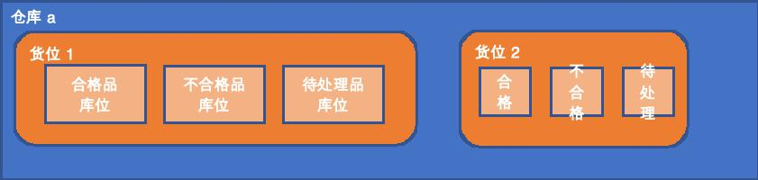

| 数据表前缀 | ||||||||
| 基础资料 | tb(base) | 基础参数 | tbs | |||||
| 1 | 编码 | |||||||
| 客户及供应商关系管理 | tbc(customer) | 2 | 名称 | |||||
| 产品管理 | tbp(product) | 40 | 备注 | |||||
| 物料资料 | tbpm(material) | |||||||
| BOM | tbpb(bom) | |||||||
| 工艺路线 | tbpr(routing) | |||||||
| 4M变更 | tbpf(four) | |||||||
| 销售管理 | ts(sale) | 销售基础参数 | tss | |||||
| 销售价格 | tsp(price) | tspa | ||||||
| 销售合同 | tsc(contract) | tsca | ||||||
| 销售需求订单 | tso(order) | 销售订单 | tsoa | tsob | ||||
| 滚动需求 | tsoc | tsoc | ||||||
| 意向订单 | tsoe | tsof | ||||||
| 售后备件订单 | tsog | tsoh | ||||||
| 销售发货计划 | tsd(delivery plan) | |||||||
| 销售交货验收 | tsj(交 jiao) | |||||||
| 销售售后 | tsa(after sale) | |||||||
| 成品对账 | tsf(finished) | |||||||
| 材料核销 | tsm(material) | |||||||
| 计划管理 | tp(plan) | 计划参数设置 | tps | |||||
| 班制表 | tpsa | |||||||
| 班次表 | tpsb | |||||||
| 工作日历 | tpsc | |||||||
| 交期评估 | tpe(estimate) | |||||||
| 主生产计划 | 无需，透视汇总 | |||||||
| 物料需求计划 | tpm(material) | |||||||
| 计划工单 | tpp(plan) | |||||||
| 月计划 | tppm | |||||||
| 半月计划 | tpph | |||||||
| 周计划 | tppw | |||||||
| 三天计划 | tppt | |||||||
| 日计划 | tppd | |||||||
| 生产排产 | tpw(work) | |||||||
| 工单齐套检查 | tpc(check) | |||||||
| 库存需求模拟 | ||||||||
| 库存配套模拟 | ||||||||
| 设备管理 | te(equipment) | 设备模块参数设置 | ||||||
| 资产管理 | tea(asset) | |||||||
| 动态管理 | ted(dynamic) | |||||||
| 模具管理 | tm(moudle) | 模具模块参数设置 | ||||||
| 资产管理 | tma(asset) | |||||||
| 动态管理 | tmd(dynamic) | |||||||
| 车间管理 | tw(workhouse) | |||||||
| 采购管理 | tg(购gou) | |||||||
| 委外管理 | to(outsource) | |||||||
| 品质管理 | tq(quality) | |||||||
| 仓库管理 | tk(库ku) | 仓库模块参数设置 | tks | |||||
| 库位管理 | tkl(location) | |||||||
| 仓库基础信息 | tkla | |||||||
| 货位基础信息 | tklb | |||||||
| 库位基础信息 | tklc | |||||||
| 库存查询 | tkq(query) | |||||||
| 入库管理 | tki(in) | |||||||
| 出库管理 | tko(out) | |||||||
| 库存盘点 | tki(inventory) | |||||||
| 成本管理 | tc(cost) | |||||||
| 报价管理 | tj(价jia) | 报价主表 | tjca | |||||
| 报价详情 | tjcb | |||||||
| 附件管理 | tf(file) | 主表 | tffa | |||||
| 基础资料附件表 | tfba | |||||||
| 销售管理附件表 | tfsa | |||||||
| 计划管理附件表 | tfpa | |||||||
| 设备管理附件表 | tfea | |||||||
| 模具管理附件表 | tfma | |||||||
| 车间管理附件表 | tfwa | |||||||
| 采购管理附件表 | tfga | |||||||
| 委外管理附件表 | tfoa | |||||||
| 品质管理附件表 | tfqa | |||||||
| 仓库管理附件表 | tfka | |||||||
| 成本管理附件表 | tfca | |||||||
| 报价管理附件表 | tfja |
| 表名 | tffa | 附件管理主表 | |||||||
| 字段名 | 类型 | 长度 | 说明 | 关联表名 | 关联字段 | 关联表显示字段 | |||
| id | varchar | 32 | N | id | |||||
| tffa01 | varchar | 32 | Y | 子附件表名称 | |||||
| tffa02 | varchar | 32 | Y | 子附件模块名 | |||||
| tffa03 | varchar | 32 | Y | 预留1 | |||||
| tffa04 | varchar | 32 | Y | 预留2 | |||||
| tffa05 | varchar | 32 | Y | 预留3 | |||||
| tffa06 | varchar | 32 | Y | 预留4 | |||||
| tffa07 | varchar | 32 | Y | 预留5 | |||||
| create_by | varchar | 32 | Y | 创建人 | |||||
| create_time | datetime | Y | 创建时间 | ||||||
| update_by | varchar | 32 | Y | 修改人 | |||||
| update_time | datetime | Y | 修改时间 | ||||||
| 表名 | tfba | 基础资料附件表 | |||||||
| 字段名 | 类型 | 长度 | 说明 | 关联表名 | 关联字段 | 关联表显示字段 | |||
| id | varchar | 32 | N | id | |||||
| tfba01 | varchar | 32 | Y | 子模块名 | |||||
| tfba02 | varchar | 100 | Y | 附件地址 | |||||
| tfba03 | varchar | 32 | Y | 预留1 | |||||
| tfba04 | varchar | 32 | Y | 预留2 | |||||
| tfba05 | varchar | 32 | Y | 预留3 | |||||
| tfba06 | varchar | 32 | Y | 预留4 | |||||
| tfba07 | varchar | 32 | Y | 预留5 | |||||
| create_by | varchar | 32 | Y | 创建人 | |||||
| create_time | datetime | Y | 创建时间 | ||||||
| update_by | varchar | 32 | Y | 修改人 | |||||
| update_time | datetime | Y | 修改时间 | ||||||
| 表名 | tfsa | 销售管理附件表 | |||||||
| 字段名 | 类型 | 长度 | 说明 | 关联表名 | 关联字段 | 关联表显示字段 | |||
| id | varchar | 32 | N | id | |||||
| tfsa01 | varchar | 32 | Y | 子模块名 | |||||
| tfsa02 | varchar | 100 | Y | 附件地址 | |||||
| tfsa03 | varchar | 32 | Y | 预留1 | |||||
| tfsa04 | varchar | 32 | Y | 预留2 | |||||
| tfsa05 | varchar | 32 | Y | 预留3 | |||||
| tfsa06 | varchar | 32 | Y | 预留4 | |||||
| tfsa07 | varchar | 32 | Y | 预留5 | |||||
| create_by | varchar | 32 | Y | 创建人 | |||||
| create_time | datetime | Y | 创建时间 | ||||||
| update_by | varchar | 32 | Y | 修改人 | |||||
| update_time | datetime | Y | 修改时间 | ||||||
| 表名 | tfpa | 计划管理附件表 | |||||||
| 字段名 | 类型 | 长度 | 说明 | 关联表名 | 关联字段 | 关联表显示字段 | |||
| id | varchar | 32 | N | id | |||||
| tfpa01 | varchar | 32 | Y | 子模块名 | |||||
| tfpa02 | varchar | 100 | Y | 附件地址 | |||||
| tfpa03 | varchar | 32 | Y | 预留1 | |||||
| tfpa04 | varchar | 32 | Y | 预留2 | |||||
| tfpa05 | varchar | 32 | Y | 预留3 | |||||
| tfpa06 | varchar | 32 | Y | 预留4 | |||||
| tfpa07 | varchar | 32 | Y | 预留5 | |||||
| create_by | varchar | 32 | Y | 创建人 | |||||
| create_time | datetime | Y | 创建时间 | ||||||
| update_by | varchar | 32 | Y | 修改人 | |||||
| update_time | datetime | Y | 修改时间 | ||||||
| 表名 | tfea | 设备管理附件表 | |||||||
| 字段名 | 类型 | 长度 | 说明 | 关联表名 | 关联字段 | 关联表显示字段 | |||
| id | varchar | 32 | N | id | |||||
| tfea01 | varchar | 32 | Y | 子模块名 | |||||
| tfea02 | varchar | 100 | Y | 附件地址 | |||||
| tfea03 | varchar | 32 | Y | 预留1 | |||||
| tfea04 | varchar | 32 | Y | 预留2 | |||||
| tfea05 | varchar | 32 | Y | 预留3 | |||||
| tfea06 | varchar | 32 | Y | 预留4 | |||||
| tfea07 | varchar | 32 | Y | 预留5 | |||||
| create_by | varchar | 32 | Y | 创建人 | |||||
| create_time | datetime | Y | 创建时间 | ||||||
| update_by | varchar | 32 | Y | 修改人 | |||||
| update_time | datetime | Y | 修改时间 | ||||||
| 表名 | tfma | 模具管理附件表 | |||||||
| 字段名 | 类型 | 长度 | 说明 | 关联表名 | 关联字段 | 关联表显示字段 | |||
| id | varchar | 32 | N | id | |||||
| tfma01 | varchar | 32 | Y | 子模块名 | |||||
| tfma02 | varchar | 100 | Y | 附件地址 | |||||
| tfma03 | varchar | 32 | Y | 预留1 | |||||
| tfma04 | varchar | 32 | Y | 预留2 | |||||
| tfma05 | varchar | 32 | Y | 预留3 | |||||
| tfma06 | varchar | 32 | Y | 预留4 | |||||
| tfma07 | varchar | 32 | Y | 预留5 | |||||
| create_by | varchar | 32 | Y | 创建人 | |||||
| create_time | datetime | Y | 创建时间 | ||||||
| update_by | varchar | 32 | Y | 修改人 | |||||
| update_time | datetime | Y | 修改时间 | ||||||
| 表名 | tfwa | 车间管理附件表 | |||||||
| 字段名 | 类型 | 长度 | 说明 | 关联表名 | 关联字段 | 关联表显示字段 | |||
| id | varchar | 32 | N | id | |||||
| tfwa01 | varchar | 32 | Y | 子模块名 | |||||
| tfwa02 | varchar | 100 | Y | 附件地址 | |||||
| tfwa03 | varchar | 32 | Y | 预留1 | |||||
| tfwa04 | varchar | 32 | Y | 预留2 | |||||
| tfwa05 | varchar | 32 | Y | 预留3 | |||||
| tfwa06 | varchar | 32 | Y | 预留4 | |||||
| tfwa07 | varchar | 32 | Y | 预留5 | |||||
| create_by | varchar | 32 | Y | 创建人 | |||||
| create_time | datetime | Y | 创建时间 | ||||||
| update_by | varchar | 32 | Y | 修改人 | |||||
| update_time | datetime | Y | 修改时间 | ||||||
| 表名 | tfga | 采购管理附件表 | |||||||
| 字段名 | 类型 | 长度 | 说明 | 关联表名 | 关联字段 | 关联表显示字段 | |||
| id | varchar | 32 | N | id | |||||
| tfga01 | varchar | 32 | Y | 子模块名 | |||||
| tfga02 | varchar | 100 | Y | 附件地址 | |||||
| tfga03 | varchar | 32 | Y | 预留1 | |||||
| tfga04 | varchar | 32 | Y | 预留2 | |||||
| tfga05 | varchar | 32 | Y | 预留3 | |||||
| tfga06 | varchar | 32 | Y | 预留4 | |||||
| tfga07 | varchar | 32 | Y | 预留5 | |||||
| create_by | varchar | 32 | Y | 创建人 | |||||
| create_time | datetime | Y | 创建时间 | ||||||
| update_by | varchar | 32 | Y | 修改人 | |||||
| update_time | datetime | Y | 修改时间 | ||||||
| 表名 | tfoa | 委外管理附件表 | |||||||
| 字段名 | 类型 | 长度 | 说明 | 关联表名 | 关联字段 | 关联表显示字段 | |||
| id | varchar | 32 | N | id | |||||
| tfoa01 | varchar | 32 | Y | 子模块名 | |||||
| tfoa02 | varchar | 100 | Y | 附件地址 | |||||
| tfoa03 | varchar | 32 | Y | 预留1 | |||||
| tfoa04 | varchar | 32 | Y | 预留2 | |||||
| tfoa05 | varchar | 32 | Y | 预留3 | |||||
| tfoa06 | varchar | 32 | Y | 预留4 | |||||
| tfoa07 | varchar | 32 | Y | 预留5 | |||||
| create_by | varchar | 32 | Y | 创建人 | |||||
| create_time | datetime | Y | 创建时间 | ||||||
| update_by | varchar | 32 | Y | 修改人 | |||||
| update_time | datetime | Y | 修改时间 | ||||||
| 表名 | tfqa | 品质管理附件表 | |||||||
| 字段名 | 类型 | 长度 | 说明 | 关联表名 | 关联字段 | 关联表显示字段 | |||
| id | varchar | 32 | N | id | |||||
| tfqa01 | varchar | 32 | Y | 子模块名 | |||||
| tfqa02 | varchar | 100 | Y | 附件地址 | |||||
| tfqa03 | varchar | 32 | Y | 预留1 | |||||
| tfqa04 | varchar | 32 | Y | 预留2 | |||||
| tfqa05 | varchar | 32 | Y | 预留3 | |||||
| tfqa06 | varchar | 32 | Y | 预留4 | |||||
| tfqa07 | varchar | 32 | Y | 预留5 | |||||
| create_by | varchar | 32 | Y | 创建人 | |||||
| create_time | datetime | Y | 创建时间 | ||||||
| update_by | varchar | 32 | Y | 修改人 | |||||
| update_time | datetime | Y | 修改时间 | ||||||
| 表名 | tfka | 仓库管理附件表 | |||||||
| 字段名 | 类型 | 长度 | 说明 | 关联表名 | 关联字段 | 关联表显示字段 | |||
| id | varchar | 32 | N | id | |||||
| tfka01 | varchar | 32 | Y | 子模块名 | |||||
| tfka02 | varchar | 100 | Y | 附件地址 | |||||
| tfka03 | varchar | 32 | Y | 预留1 | |||||
| tfka04 | varchar | 32 | Y | 预留2 | |||||
| tfka05 | varchar | 32 | Y | 预留3 | |||||
| tfka06 | varchar | 32 | Y | 预留4 | |||||
| tfka07 | varchar | 32 | Y | 预留5 | |||||
| create_by | varchar | 32 | Y | 创建人 | |||||
| create_time | datetime | Y | 创建时间 | ||||||
| update_by | varchar | 32 | Y | 修改人 | |||||
| update_time | datetime | Y | 修改时间 | ||||||
| 表名 | tfca | 成本管理附件表 | |||||||
| 字段名 | 类型 | 长度 | 说明 | 关联表名 | 关联字段 | 关联表显示字段 | |||
| id | varchar | 32 | N | id | |||||
| tfca01 | varchar | 32 | Y | 子模块名 | |||||
| tfca02 | varchar | 100 | Y | 附件地址 | |||||
| tfca03 | varchar | 32 | Y | 预留1 | |||||
| tfca04 | varchar | 32 | Y | 预留2 | |||||
| tfca05 | varchar | 32 | Y | 预留3 | |||||
| tfca06 | varchar | 32 | Y | 预留4 | |||||
| tfca07 | varchar | 32 | Y | 预留5 | |||||
| create_by | varchar | 32 | Y | 创建人 | |||||
| create_time | datetime | Y | 创建时间 | ||||||
| update_by | varchar | 32 | Y | 修改人 | |||||
| update_time | datetime | Y | 修改时间 | ||||||
| 表名 | tfja | 报价管理附件表 | |||||||
| 字段名 | 类型 | 长度 | 说明 | 关联表名 | 关联字段 | 关联表显示字段 | |||
| id | varchar | 32 | N | id | |||||
| tfja01 | varchar | 32 | Y | 子模块名 | |||||
| tfja02 | varchar | 100 | Y | 附件地址 | |||||
| tfja03 | varchar | 32 | Y | 预留1 | |||||
| tfja04 | varchar | 32 | Y | 预留2 | |||||
| tfja05 | varchar | 32 | Y | 预留3 | |||||
| tfja06 | varchar | 32 | Y | 预留4 | |||||
| tfja07 | varchar | 32 | Y | 预留5 | |||||
| create_by | varchar | 32 | Y | 创建人 | |||||
| create_time | datetime | Y | 创建时间 | ||||||
| update_by | varchar | 32 | Y | 修改人 | |||||
| update_time | datetime | Y | 修改时间 |
| 列1 | 列2 | 列3 | 列4 | 列5 | 列6 | 列7 | 列8 | ||||||||||||||||||||
| tbsa | 参数主表 | ||||||||||||||||||||||||||
| 字段 | 类型 | 长度 | IS NULL | 默认 | 说明 | tbsaa | 参数主表1 | ||||||||||||||||||||
| id | varchar | 32 | N | id | tbsab | 参数主表2 | |||||||||||||||||||||
| tbsa01 | varchar | 1 | N | 数据类型(0:string,1:number,3:date) | id | 数据类型(0:string,1:number,3:date) | 名称 | 长度 | 父id（tbsa_id） | 级别 | 是否显示 | 预留2 | 预留3 | 预留4 | 预留5 | id | 模块位置（表名） | 模块字段 | |||||||||
| tbsa02 | varchar | 32 | N | 名称 | 1 | 订单等级 | 1 | tsoa | tsoa09 | ||||||||||||||||||
| tbsa03 | int | 2 | Y | 长度 | 2 | tosc | tsoc09 | ||||||||||||||||||||
| tbsa04 | varchar | 32 | Y | 父id（tbsa_id） | |||||||||||||||||||||||
| tbsa05 | int | 2 | Y | 1 | 级别 | ||||||||||||||||||||||
| tbsa06 | varchar | 32 | Y | 模块位置（表名）0 | tbsac | 参数主表关系表 | |||||||||||||||||||||
| tbsa07 | varchar | 10 | Y | 模块字段 0 | id | tbsaa_id | tbsab_id | ||||||||||||||||||||
| tbsa08 | int | 1 | Y | 是否显示 | 1 | 1 | 1 | ||||||||||||||||||||
| tbsa09 | varchar | 32 | Y | 预留2 | 2 | 1 | 2 | ||||||||||||||||||||
| tbsa10 | varchar | 32 | Y | 预留3 | |||||||||||||||||||||||
| tbsa11 | varchar | 32 | Y | 预留4 | |||||||||||||||||||||||
| tbsa12 | varchar | 32 | Y | 预留5 | |||||||||||||||||||||||
| tbsa40 | varchar | 100 | Y | 备注 | |||||||||||||||||||||||
| status | varchar | 1 | Y | 1 | 状态(0:失效,1:启用) | ||||||||||||||||||||||
| create_by | varchar | 32 | Y | 创建人 | |||||||||||||||||||||||
| create_time | datetime | Y | 创建时间 | ||||||||||||||||||||||||
| update_by | varchar | 32 | Y | 修改人 | |||||||||||||||||||||||
| update_time | datetime | Y | 修改时间 | ||||||||||||||||||||||||
| tbsb | 参数子表 | ||||||||||||||||||||||||||
| 字段 | 类型 | 长度 | IS NULL | 说明 | |||||||||||||||||||||||
| id | varchar | 32 | N | id | |||||||||||||||||||||||
| tbsa_id | varchar | 32 | N | tbsa表id | |||||||||||||||||||||||
| tbsb01 | varchar | 32 | N | 值（编码） | |||||||||||||||||||||||
| tbsb02 | varchar | 32 | N | 显示的文本 | |||||||||||||||||||||||
| tbsb03 | int | 2 | Y | 1 | 排序 | ||||||||||||||||||||||
| tbsb04 | varchar | 32 | Y | 父id（tbsb_id) | |||||||||||||||||||||||
| tbsb05 | varchar | 32 | Y | 预留2 | |||||||||||||||||||||||
| tbsb06 | varchar | 32 | Y | 预留3 | |||||||||||||||||||||||
| tbsb07 | varchar | 32 | Y | 预留4 | |||||||||||||||||||||||
| tbsb08 | varchar | 32 | Y | 预留5 | |||||||||||||||||||||||
| tbsb40 | varchar | 100 | Y | 备注 | |||||||||||||||||||||||
| status | varchar | 1 | Y | 1 | 状态(0:失效,1:启用) | ||||||||||||||||||||||
| create_by | varchar | 32 | Y | 创建人 | |||||||||||||||||||||||
| create_time | datetime | Y | 创建时间 | ||||||||||||||||||||||||
| update_by | varchar | 32 | Y | 修改人 | |||||||||||||||||||||||
| update_time | datetime | Y | 修改时间 | ||||||||||||||||||||||||
| tbsc | 编码规则表 | ||||||||||||||||||||||||||
| 字段 | 类型 | 长度 | IS NULL | 说明 | |||||||||||||||||||||||
| id | varchar | 32 | N | id | |||||||||||||||||||||||
| tbsc01 | varchar | 32 | N | 模块位置(表名) | |||||||||||||||||||||||
| tbsc02 | int | 1 | Y | 0 | 是否允许修改 | ||||||||||||||||||||||
| tbsc03 | varchar | 32 | Y | 预留1 | |||||||||||||||||||||||
| tbsc04 | varchar | 32 | Y | 预留2 | |||||||||||||||||||||||
| tbsc05 | varchar | 32 | Y | 预留3 | |||||||||||||||||||||||
| tbsc06 | varchar | 32 | Y | 预留4 | |||||||||||||||||||||||
| tbsc07 | varchar | 32 | Y | 预留5 | |||||||||||||||||||||||
| tbsc40 | varchar | 32 | Y | 备注 | |||||||||||||||||||||||
| status | varchar | 1 | Y | 1 | 状态(0:失效,1:启用) | ||||||||||||||||||||||
| create_by | varchar | 32 | Y | 创建人 | |||||||||||||||||||||||
| create_time | datetime | Y | 创建时间 | ||||||||||||||||||||||||
| update_by | varchar | 32 | Y | 修改人 | |||||||||||||||||||||||
| update_time | datetime | Y | 修改时间 | ||||||||||||||||||||||||
| tbsd | 小数点表 | ||||||||||||||||||||||||||
| 字段 | 类型 | 长度 | IS NULL | 说明 | |||||||||||||||||||||||
| id | varchar | 32 | N | id | |||||||||||||||||||||||
| tbsd01 | varchar | 32 | N | 模块名 | |||||||||||||||||||||||
| tbsd02 | varchar | 32 | N | 表名 | |||||||||||||||||||||||
| tbsd03 | varchar | 32 | N | 字段名 | |||||||||||||||||||||||
| tbsd04 | int | 10 | Y | 位数 | |||||||||||||||||||||||
| tbsd05 | varchar | 32 | Y | 预留1 | |||||||||||||||||||||||
| tbsd06 | varchar | 32 | Y | 预留2 | |||||||||||||||||||||||
| tbsd07 | varchar | 32 | Y | 预留3 | |||||||||||||||||||||||
| tbsd08 | varchar | 32 | Y | 预留4 | |||||||||||||||||||||||
| tbsd09 | varchar | 32 | Y | 预留5 | |||||||||||||||||||||||
| status | varchar | 1 | Y | 1 | 状态(0:失效,1:启用) | ||||||||||||||||||||||
| create_by | varchar | 32 | Y | 创建人 | |||||||||||||||||||||||
| create_time | datetime | Y | 创建时间 | ||||||||||||||||||||||||
| update_by | varchar | 32 | Y | 修改人 | |||||||||||||||||||||||
| update_time | datetime | Y | 修改时间 | ||||||||||||||||||||||||
| tbse | 作废 | ||||||||||||||||||||||||||
| 字段 | 类型 | 长度 | IS NULL | 说明 | |||||||||||||||||||||||
| id | varchar | 32 | N | id | |||||||||||||||||||||||
| tbsc_id | varchar | 32 | N | 关联tbsc_id | |||||||||||||||||||||||
| tbse01 | varchar | 32 | N | 关联tbsb_id | |||||||||||||||||||||||
| tbse02 | varchar | 32 | N | NULL | |||||||||||||||||||||||
| tbse03 | int | 1 | N | 1 | 排序 | ||||||||||||||||||||||
| tbse04 | varchar | 32 | Y | 预留1 | |||||||||||||||||||||||
| tbse05 | varchar | 32 | Y | 预留2 | |||||||||||||||||||||||
| tbse06 | varchar | 32 | Y | 预留3 | |||||||||||||||||||||||
| tbse07 | varchar | 32 | Y | 预留4 | |||||||||||||||||||||||
| tbse08 | varchar | 32 | Y | 预留5 | |||||||||||||||||||||||
| status | varchar | 1 | Y | 1 | 状态(0:失效,1:启用) | ||||||||||||||||||||||
| create_by | varchar | 32 | Y | 创建人 | |||||||||||||||||||||||
| create_time | datetime | Y | 创建时间 | ||||||||||||||||||||||||
| update_by | varchar | 32 | Y | 修改人 | |||||||||||||||||||||||
| update_time | datetime | Y | 修改时间 | ||||||||||||||||||||||||
| tbsf | 作废 | ||||||||||||||||||||||||||
| 字段 | 类型 | 长度 | IS NULL | 说明 | |||||||||||||||||||||||
| id | varchar | 32 | N | id | |||||||||||||||||||||||
| tbsc_id | varchar | 32 | N | 关联tbsc_id | |||||||||||||||||||||||
| tbsf01 | varchar | 32 | N | NILL | |||||||||||||||||||||||
| tbsf02 | varchar | 32 | N | 固定字符文本 | |||||||||||||||||||||||
| tbsf03 | int | 1 | N | 1 | 排序 | ||||||||||||||||||||||
| tbsf04 | varchar | 32 | Y | 预留1 | |||||||||||||||||||||||
| tbsf05 | varchar | 32 | Y | 预留2 | |||||||||||||||||||||||
| tbsf06 | varchar | 32 | Y | 预留3 | |||||||||||||||||||||||
| tbsf07 | varchar | 32 | Y | 预留4 | |||||||||||||||||||||||
| tbsf08 | varchar | 32 | Y | 预留5 | |||||||||||||||||||||||
| status | varchar | 1 | Y | 1 | 状态(0:失效,1:启用) | ||||||||||||||||||||||
| create_by | varchar | 32 | Y | 创建人 | |||||||||||||||||||||||
| create_time | datetime | Y | 创建时间 | ||||||||||||||||||||||||
| update_by | varchar | 32 | Y | 修改人 | |||||||||||||||||||||||
| update_time | datetime | Y | 修改时间 | ||||||||||||||||||||||||
| tbsg | 作废 | ||||||||||||||||||||||||||
| 字段 | 类型 | 长度 | IS NULL | 说明 | |||||||||||||||||||||||
| id | varchar | 32 | N | id | |||||||||||||||||||||||
| tbsc_id | varchar | 32 | N | 关联tbsc_id | |||||||||||||||||||||||
| tbsg01 | varchar | 32 | N | 关联tbsa_id | |||||||||||||||||||||||
| tbsg02 | varchar | 32 | N | NULL | |||||||||||||||||||||||
| tbsg03 | int | 1 | N | 1 | 排序 | ||||||||||||||||||||||
| tbsg04 | varchar | 32 | Y | 预留1 | |||||||||||||||||||||||
| tbsg05 | varchar | 32 | Y | 预留2 | |||||||||||||||||||||||
| tbsg06 | varchar | 32 | Y | 预留3 | |||||||||||||||||||||||
| tbsg07 | varchar | 32 | Y | 预留4 | |||||||||||||||||||||||
| tbsg08 | varchar | 32 | Y | 预留5 | |||||||||||||||||||||||
| status | varchar | 1 | Y | 1 | 状态(0:失效,1:启用) | ||||||||||||||||||||||
| create_by | varchar | 32 | Y | 创建人 | |||||||||||||||||||||||
| create_time | datetime | Y | 创建时间 | ||||||||||||||||||||||||
| update_by | varchar | 32 | Y | 修改人 | |||||||||||||||||||||||
| update_time | datetime | Y | 修改时间 | ||||||||||||||||||||||||
| tbsaa | 参数主表1 | ||||||||||||||||||||||||||
| 类型 | 长度 | IS NULL | 默认 | 说明 | |||||||||||||||||||||||
| id | varchar | 32 | N | id | |||||||||||||||||||||||
| tbsaa01 | varchar | 1 | N | 数据类型(0:string,1:number,3:date) | |||||||||||||||||||||||
| tbsaa02 | varchar | 32 | N | 名称 | |||||||||||||||||||||||
| tbsaa03 | int | 2 | Y | 长度 | |||||||||||||||||||||||
| tbsaa04 | varchar | 32 | Y | 父id（tbsa_id） | |||||||||||||||||||||||
| tbsaa05 | int | 2 | Y | 1 | 级别 | ||||||||||||||||||||||
| tbsaa06 | int | 1 | Y | 是否显示 | |||||||||||||||||||||||
| tbsaa07 | int | 1 | Y | 排序 | |||||||||||||||||||||||
| tbsaa08 | varchar | 32 | Y | 预留3 | |||||||||||||||||||||||
| tbsaa09 | varchar | 32 | Y | 预留4 | |||||||||||||||||||||||
| tbsaa10 | varchar | 32 | Y | 预留5 | |||||||||||||||||||||||
| tbsaa40 | varchar | 100 | Y | 备注 | |||||||||||||||||||||||
| status | varchar | 1 | Y | 1 | 状态(0:失效,1:启用) | ||||||||||||||||||||||
| create_by | varchar | 32 | Y | 创建人 | |||||||||||||||||||||||
| create_time | datetime | Y | 创建时间 | ||||||||||||||||||||||||
| update_by | varchar | 32 | Y | 修改人 | |||||||||||||||||||||||
| update_time | datetime | Y | 修改时间 | ||||||||||||||||||||||||
| tbsab | 参数主表2 | ||||||||||||||||||||||||||
| 类型 | 长度 | IS NULL | 默认 | 说明 | |||||||||||||||||||||||
| id | varchar | 32 | N | id | |||||||||||||||||||||||
| tbsab01 | varchar | 32 | Y | 模块位置（表名） | |||||||||||||||||||||||
| tbsab02 | varchar | 10 | Y | 模块字段 | |||||||||||||||||||||||
| create_by | varchar | 32 | Y | 创建人 | |||||||||||||||||||||||
| create_time | datetime | Y | 创建时间 | ||||||||||||||||||||||||
| update_by | varchar | 32 | Y | 修改人 | |||||||||||||||||||||||
| update_time | datetime | Y | 修改时间 | ||||||||||||||||||||||||
| tbsac | 参数主表关系表 | ||||||||||||||||||||||||||
| 类型 | 长度 | IS NULL | 默认 | 说明 | |||||||||||||||||||||||
| id | varchar | 32 | N | id | |||||||||||||||||||||||
| tbsac01 | varchar | 32 | Y | tbsaa_id | |||||||||||||||||||||||
| tbsac02 | varchar | 10 | Y | tbsab_id | |||||||||||||||||||||||
| create_by | varchar | 32 | Y | 创建人 | |||||||||||||||||||||||
| create_time | datetime | Y | 创建时间 | ||||||||||||||||||||||||
| update_by | varchar | 32 | Y | 修改人 | |||||||||||||||||||||||
| update_time | datetime | Y | 修改时间 |
| 表名 | tbca | 客户及供应商基础信息表 | ||||||||||
| 字段名 | 类型 | 长度 | IS NULL | 默认 | 说明 | 关联表名 | 关联字段 | 关联表显示字段 | tbca_history | |||
| id | varchar | 32 | N | id | ||||||||
| tbca01 | varchar | 32 | N | 编码 | ||||||||
| tbca02 | varchar | 32 | N | 名称 | ||||||||
| tbca03 | varchar | 10 | Y | 简称 | ||||||||
| tbca04 | varchar | 32 | N | 合作关系 | tbsb | id | tbsb02 | |||||
| tbca05 | varchar | 50 | Y | 详细地址 | ||||||||
| tbca06 | varchar | 32 | Y | 电子邮箱 | ||||||||
| tbca07 | varchar | 32 | Y | 单位负责人 | ||||||||
| tbca08 | varchar | 32 | N | 主营业务 | tbsb | id | tbsb02 | |||||
| tbca09 | varchar | 32 | N | 客户体系 | tbsb | id | tbsb02 | |||||
| tbca10 | varchar | 32 | N | 经营状况 | tbsb | id | tbsb02 | |||||
| tbca11 | varchar | 32 | N | 客户属性 | tbsb | id | tbsb02 | |||||
| tbca12 | varchar | 32 | N | 客户类别 | tbsb | id | tbsb02 | |||||
| tbca13 | varchar | 32 | Y | 业务人员 | sys_user | id | realname | |||||
| tbca14 | varchar | 32 | Y | 客供图片 | tfba | id | tfba02 | |||||
| tbca15 | varchar | 255 | Y | 业务人员对应部门【暂存】 | ||||||||
| tbca16 | varchar | 32 | Y | 预留2 | ||||||||
| tbca17 | varchar | 32 | Y | 预留3 | ||||||||
| tbca18 | varchar | 32 | Y | 预留4 | ||||||||
| tbca19 | varchar | 32 | Y | 预留5 | ||||||||
| status | varchar | 1 | Y | 1 | 状态(F:归档,1:生效) | |||||||
| create_by | varchar | 32 | Y | 创建人 | ||||||||
| create_time | datetime | Y | 创建时间 | |||||||||
| update_by | varchar | 32 | Y | 修改人 | ||||||||
| update_time | datetime | Y | 修改时间 | |||||||||
| 表名 | tbcb | 对方的业务人员联系信息表 | ||||||||||
| 字段名 | 类型 | 长度 | 说明 | 关联表名 | 关联字段 | 关联表显示字段 | ||||||
| id | varchar | 32 | N | id | ||||||||
| tbcb01 | varchar | 32 | N | 编码 | tbca | id | ||||||
| tbcb02 | varchar | 32 | N | 联系人 | ||||||||
| tbcb03 | varchar | 32 | Y | 联系人电话 | ||||||||
| tbcb04 | varchar | 32 | Y | 微信 | ||||||||
| tbcb05 | varchar | 32 | Y | 邮箱 | ||||||||
| tbcb06 | varchar | 32 | Y | 其他 | ||||||||
| tbcb07 | varchar | 32 | Y | 预留4 | ||||||||
| tbcb08 | varchar | 32 | Y | 预留5 | ||||||||
| create_by | varchar | 32 | Y | 创建人 | ||||||||
| create_time | datetime | Y | 创建时间 | |||||||||
| update_by | varchar | 32 | Y | 修改人 | ||||||||
| update_time | datetime | Y | 修改时间 | |||||||||
| 表名 | tbcc | 客户及供应商信用管制表 | ||||||||||
| 字段名 | 类型 | 长度 | 说明 | 关联表名 | 关联字段 | 关联表显示字段 | ||||||
| id | varchar | 32 | N | id | ||||||||
| tbcc01 | varchar | 32 | N | 编码 | tbca | id | ||||||
| tbcc02 | int | 10 | Y | 信用额度 | ||||||||
| tbcc03 | varchar | 32 | Y | 信用管制方式 | tbsb | id | tbsb02 | |||||
| tbcc04 | int | 10 | Y | 冻结付款 | ||||||||
| tbcc05 | int | 4 | Y | 冻结付款比例 | ||||||||
| tbcc06 | varchar | 32 | Y | 信用评级 | tbsb | id | tbsb02 | |||||
| tbcc07 | varchar | 32 | Y | 预留1 | ||||||||
| tbcc08 | varchar | 32 | Y | 预留2 | ||||||||
| tbcc09 | varchar | 32 | Y | 预留3 | ||||||||
| tbcc10 | varchar | 32 | Y | 预留4 | ||||||||
| tbcc11 | varchar | 32 | Y | 预留5 | ||||||||
| create_by | varchar | 32 | Y | 创建人 | ||||||||
| create_time | datetime | Y | 创建时间 | |||||||||
| update_by | varchar | 32 | Y | 修改人 | ||||||||
| update_time | datetime | Y | 修改时间 | |||||||||
| 表名 | tbcd | 客户及供应商结算方式表 | ||||||||||
| 字段名 | 类型 | 长度 | 说明 | 关联表名 | 关联字段 | 关联表显示字段 | ||||||
| id | varchar | 32 | N | id | ||||||||
| tbcd01 | varchar | 32 | N | 编码 | tbca | id | ||||||
| tbcd02 | varchar | 32 | Y | 纳税人识别号 | ||||||||
| tbcd03 | int | 1 | Y | 1 | 是否开票结算(0:否,1:是) | |||||||
| tbcd04 | int | 4 | Y | 开票税率 | ||||||||
| tbcd05 | varchar | 32 | Y | 开票公司名称 | ||||||||
| tbcd06 | varchar | 50 | Y | 发票地址 | ||||||||
| tbcd07 | varchar | 32 | Y | 发票联系人 | ||||||||
| tbcd08 | varchar | 32 | Y | 联系方式 | ||||||||
| tbcd09 | varchar | 32 | Y | 收款方式 | tbsb | id | tbsb02 | |||||
| tbcd10 | varchar | 32 | Y | 银行代号 | ||||||||
| tbcd11 | varchar | 32 | Y | 银行名称 | ||||||||
| tbcd12 | varchar | 32 | Y | 银行账号 | ||||||||
| tbcd13 | varchar | 32 | Y | 账户名称 | ||||||||
| tbcd14 | varchar | 32 | Y | 预留1 | ||||||||
| tbcd15 | varchar | 32 | Y | 预留2 | ||||||||
| tbcd16 | varchar | 32 | Y | 预留3 | ||||||||
| tbcd17 | varchar | 32 | Y | 预留4 | ||||||||
| tbcd18 | varchar | 32 | Y | 预留5 | ||||||||
| create_by | varchar | 32 | Y | 创建人 | ||||||||
| create_time | datetime | Y | 创建时间 | |||||||||
| update_by | varchar | 32 | Y | 修改人 | ||||||||
| update_time | datetime | Y | 修改时间 | |||||||||
| 表名 | tbce | 客户及供应商账期表 | ||||||||||
| 字段名 | 类型 | 长度 | 说明 | 关联表名 | 关联字段 | 关联表显示字段 | ||||||
| id | varchar | 32 | N | id | ||||||||
| tbce01 | varchar | 32 | N | 编码 | tbca | id | ||||||
| tbce02 | int | 10 | Y | 订单预收款/预付款 | ||||||||
| tbce03 | int | 10 | Y | 订单预收款/预付款比例 | ||||||||
| tbce04 | int | 10 | Y | 出货前预收款/预付款 | ||||||||
| tbce05 | int | 10 | Y | 出货前预收款/预付款比例 | ||||||||
| tbce06 | varchar | 32 | Y | 出货后结算的账期 | tbsb | id | tbsb02 | |||||
| tbce07 | int | 10 | Y | 出货后月结算天数 | ||||||||
| tbce08 | int | 10 | Y | 出货后结算的账期比例 | ||||||||
| tbce09 | int | 10 | Y | 开票后结算的账期 | ||||||||
| tbce10 | int | 10 | Y | 开票后结算的账期比例 | ||||||||
| tbce11 | varchar | 32 | Y | 预留1 | ||||||||
| tbce12 | varchar | 32 | Y | 预留2 | ||||||||
| tbce13 | varchar | 32 | Y | 预留3 | ||||||||
| tbce14 | varchar | 32 | Y | 预留4 | ||||||||
| tbce15 | varchar | 32 | Y | 预留5 | ||||||||
| create_by | varchar | 32 | Y | 创建人 | ||||||||
| create_time | datetime | Y | 创建时间 | |||||||||
| update_by | varchar | 32 | Y | 修改人 | ||||||||
| update_time | datetime | Y | 修改时间 | |||||||||
| 表名 | tbcf | 客户及供应商营业附件表 | ||||||||||
| 字段名 | 类型 | 长度 | 说明 | 关联表名 | 关联字段 | 关联表显示字段 | ||||||
| id | varchar | 32 | N | id | ||||||||
| tbcf01 | varchar | 32 | N | 编码 | tbca | id | ||||||
| tbcf02 | varchar | 32 | Y | 公司网站 | ||||||||
| tbcf03 | date | Y | 成立时间 | |||||||||
| tbcf04 | int | 10 | Y | 员工人数 | ||||||||
| tbcf05 | varchar | 32 | Y | 营业性质 | tbsb | id | tbsb02 | |||||
| tbcf06 | int | 10 | Y | 资本总额 | ||||||||
| tbcf07 | varchar | 32 | Y | 营业附件地址 | tfba | id | tfba02 | |||||
| tbcf08 | varchar | 32 | Y | 预留1 | ||||||||
| tbcf09 | varchar | 32 | Y | 预留2 | ||||||||
| tbcf10 | varchar | 32 | Y | 预留3 | ||||||||
| tbcf11 | varchar | 32 | Y | 预留4 | ||||||||
| tbcf12 | varchar | 32 | Y | 预留5 | ||||||||
| create_by | varchar | 32 | Y | 创建人 | ||||||||
| create_time | datetime | Y | 创建时间 | |||||||||
| update_by | varchar | 32 | Y | 修改人 | ||||||||
| update_time | datetime | Y | 修改时间 | |||||||||
| 表名 | tbcg | 与本公司交易的主要产品表 | ||||||||||
| 字段名 | 类型 | 长度 | 说明 | 关联表名 | 关联字段 | 关联表显示字段 | ||||||
| id | varchar | 32 | N | id | ||||||||
| tbcg01 | varchar | 32 | N | 编码 | tbca | id | ||||||
| tbcg02 | varchar | 32 | Y | 产品id | tbpma | id | tbpma02 | tbpma12 | ||||
| tbcg03 | int | 2 | Y | 1 | 排序 | |||||||
| tbcg04 | varchar | 32 | Y | 预留1 | ||||||||
| tbcg05 | varchar | 32 | Y | 预留2 | ||||||||
| tbcg06 | varchar | 32 | Y | 预留3 | ||||||||
| tbcg07 | varchar | 32 | Y | 预留4 | ||||||||
| tbcg08 | varchar | 32 | Y | 预留5 | ||||||||
| create_by | varchar | 32 | Y | 创建人 | ||||||||
| create_time | datetime | Y | 创建时间 | |||||||||
| update_by | varchar | 32 | Y | 修改人 | ||||||||
| update_time | datetime | Y | 修改时间 | |||||||||
| 表名 | tbpm | 物料主表 | |||||||||||||||
| 字段名 | 类型 | 长度 | IS NULL | 默认 | 说明 | 关联表名 | 关联字段 | 关联表显示字段 | |||||||||
| id | varchar | 32 | N | id | |||||||||||||
| tbpm01 | varchar | 32 | N | 物料编码 | |||||||||||||
| tbpm02 | varchar | 32 | N | 物料名称 | |||||||||||||
| tbpm03 | varchar | 32 | N | 物料简称 | |||||||||||||
| tbpm04 | int | 1 | Y | 0 | 是否版次管理 | ||||||||||||
| tbpm05 | int | 1 | Y | 0 | 是否批次管理 | ||||||||||||
| tbpm06 | int | 1 | Y | 1 | 不同版次是否合并库存（暂时不显示） | ||||||||||||
| tbpm07 | int | 1 | Y | 1 | 不同批次是否合并库存（暂时不显示） | ||||||||||||
| tbpm08 | int | 1 | Y | 低阶码（暂时不显示） | |||||||||||||
| tbpm09 | varchar | 32 | Y | 预留2 | |||||||||||||
| tbpm10 | varchar | 32 | Y | 预留3 | |||||||||||||
| tbpm11 | varchar | 32 | Y | 预留4 | |||||||||||||
| tbpm12 | varchar | 32 | Y | 预留5 | |||||||||||||
| status | varchar | 1 | Y | 1 | 状态(F:归档,1:生效) | ||||||||||||
| create_by | varchar | 32 | Y | 创建人 | |||||||||||||
| create_time | datetime | Y | 创建时间 | ||||||||||||||
| update_by | varchar | 32 | Y | 修改人 | |||||||||||||
| update_time | datetime | Y | 修改时间 | ||||||||||||||
| 表名 | tbpma | 物料基础信息表 | |||||||||||||||
| 字段名 | 类型 | 长度 | IS NULL | 默认 | 说明 | 关联表名 | 关联字段 | 关联表显示字段 | |||||||||
| id | varchar | 32 | N | id | |||||||||||||
| tbpma01 | varchar | 32 | N | 物料主表id | tbpm | id | |||||||||||
| tbpma02 | varchar | 32 | N | 版次id | tbpml | id | |||||||||||
| tbpma03 | varchar | 10 | Y | 预留6 | |||||||||||||
| tbpma04 | varchar | 32 | Y | 货品规格 | |||||||||||||
| tbpma05 | varchar | 32 | Y | 零件图号 | |||||||||||||
| tbpma06 | varchar | 32 | N | 大类 | tbsb | id | tbsb02 | ||||||||||
| tbpma07 | varchar | 32 | N | 中类 | tbsb | id | tbsb02 | ||||||||||
| tbpma08 | varchar | 32 | N | 小类 | tbsb | id | tbsb02 | ||||||||||
| tbpma09 | varchar | 32 | Y | 颜色属性-色系 | tbsb | id | tbsb02 | ||||||||||
| tbpma10 | varchar | 32 | Y | 颜色属性-深浅程度 | tbsb | id | tbsb03 | ||||||||||
| tbpma11 | varchar | 32 | N | 来源属性 | tbsb | id | tbsb02 | ||||||||||
| tbpma12 | varchar | 32 | Y | 物料图片地址 | tfba | id | tfba02 | ||||||||||
| tbpma13 | varchar | 32 | Y | 预留1 | |||||||||||||
| tbpma14 | varchar | 255 | Y | 分类属性【数组】 | |||||||||||||
| tbpma15 | varchar | 255 | Y | 颜色属性【数组】 | |||||||||||||
| tbpma16 | varchar | 32 | Y | 预留4 | |||||||||||||
| tbpma17 | varchar | 32 | Y | 预留5 | |||||||||||||
| status | varchar | 1 | Y | 1 | 状态(F:归档,1:生效) | ||||||||||||
| create_by | varchar | 32 | Y | 创建人 | |||||||||||||
| create_time | datetime | Y | 创建时间 | ||||||||||||||
| update_by | varchar | 32 | Y | 修改人 | |||||||||||||
| update_time | datetime | Y | 修改时间 | ||||||||||||||
| 表名 | tbpmb | 物料对应编码与供应商比例表 | |||||||||||||||
| 字段名 | 类型 | 长度 | IS NULL | 默认 | 说明 | 关联表名 | 关联字段 | 关联表显示字段 | |||||||||
| id | varchar | 32 | N | id | |||||||||||||
| tbpmb01 | varchar | 32 | N | 物料基础表tmpma_id | tbpma | id | |||||||||||
| tbpmb02 | varchar | 32 | Y | 对应物料名称 | |||||||||||||
| tbpmb03 | varchar | 32 | Y | 对应物料编码 | |||||||||||||
| tbpmb04 | varchar | 32 | Y | 客户/供应商id | tbca | id | tbca03(客户简称) | ||||||||||
| tbpmb05 | int | 1 | Y | 配额顺序 | |||||||||||||
| tbpmb06 | varchar | 32 | Y | 比例（小数） | |||||||||||||
| tbpmb07 | int | 10 | Y | 最小包装单元(数量) | |||||||||||||
| tbpmb08 | int | 1 | Y | 排序 | |||||||||||||
| tbpmb09 | varchar | 32 | Y | 预留2 | |||||||||||||
| tbpmb10 | varchar | 32 | Y | 预留3 | |||||||||||||
| tbpmb11 | varchar | 32 | Y | 预留4 | |||||||||||||
| tbpmb12 | varchar | 32 | Y | 预留5 | |||||||||||||
| create_by | varchar | 32 | Y | 创建人 | |||||||||||||
| create_time | datetime | Y | 创建时间 | ||||||||||||||
| update_by | varchar | 32 | Y | 修改人 | |||||||||||||
| update_time | datetime | Y | 修改时间 | ||||||||||||||
| 表名 | tbpmc | 物料成本资料表 | |||||||||||||||
| 字段名 | 类型 | 长度 | IS NULL | 默认 | 说明 | 关联表名 | 关联字段 | 关联表显示字段 | |||||||||
| id | varchar | 32 | N | id | |||||||||||||
| tbpmc01 | varchar | 32 | N | 物料基础表tmpma_id | tbpma | id | |||||||||||
| tbpmc02 | varchar | 32 | Y | 成本计算方式 | tbsb | id | tbsb | ||||||||||
| tbpmc03 | varchar | 32 | Y | 原材料成本（小数） | |||||||||||||
| tbpmc04 | varchar | 32 | Y | 委外费用（小数） | |||||||||||||
| tbpmc05 | varchar | 32 | Y | 制造费用（小数） | |||||||||||||
| tbpmc06 | varchar | 32 | Y | 人工费用（小数） | |||||||||||||
| tbpmc07 | varchar | 32 | Y | 生产成本（小数） | |||||||||||||
| tbpmc08 | varchar | 32 | Y | 一次损耗率（小数） | |||||||||||||
| tbpmc09 | varchar | 32 | Y | 二次损耗率（小数） | |||||||||||||
| tbpmc10 | varchar | 32 | Y | 预留1 | |||||||||||||
| tbpmc11 | varchar | 32 | Y | 预留2 | |||||||||||||
| tbpmc12 | varchar | 32 | Y | 预留3 | |||||||||||||
| tbpmc13 | varchar | 32 | Y | 预留4 | |||||||||||||
| tbpmc14 | varchar | 32 | Y | 预留5 | |||||||||||||
| create_by | varchar | 32 | Y | 创建人 | |||||||||||||
| create_time | datetime | Y | 创建时间 | ||||||||||||||
| update_by | varchar | 32 | Y | 修改人 | |||||||||||||
| update_time | datetime | Y | 修改时间 | ||||||||||||||
| 表名 | tbpmd | 物料仓储属性表 | |||||||||||||||
| 字段名 | 类型 | 长度 | IS NULL | 默认 | 说明 | 关联表名 | 关联字段 | 关联表显示字段 | |||||||||
| id | varchar | 32 | N | id | |||||||||||||
| tbpmd01 | varchar | 32 | N | 物料基础表tmpma_id | tbpma | id | |||||||||||
| tbpmd02 | varchar | 32 | Y | 主单位 | tbsb | id | tbsb02 | ||||||||||
| tbpmd03 | varchar | 32 | Y | 辅助单位 | tbsb | id | tbsb02 | ||||||||||
| tbpmd04 | varchar | 32 | Y | 单位转换率（小数） | |||||||||||||
| tbpmd05 | varchar | 32 | Y | 物料消耗部门 | sys_depart | id | depart_name | ||||||||||
| tbpmd06 | varchar | 32 | Y | 物料消耗货位 | tklb | id | tklb02 | ||||||||||
| tbpmd07 | varchar | 32 | Y | 仓库存储货位 | tklb | id | tklb02 | ||||||||||
| tbpmd08 | varchar | 32 | Y | 仓库备用货位 | tklb | id | tklb02 | ||||||||||
| tbpmd09 | varchar | 32 | Y | 车间存储货位 | tklb | id | tklb02 | ||||||||||
| tbpmd10 | varchar | 255 | Y | 物料消耗部门【数组】 | |||||||||||||
| tbpmd11 | varchar | 255 | Y | 物料消耗货位【数组】 | |||||||||||||
| tbpmd12 | varchar | 255 | Y | 仓库存储货位【数组】 | |||||||||||||
| tbpmd13 | varchar | 255 | Y | 仓库备用货位【数组】 | |||||||||||||
| tbpmd14 | varchar | 255 | Y | 车间存储货位【数组】 | |||||||||||||
| create_by | varchar | 32 | Y | 创建人 | |||||||||||||
| create_time | datetime | Y | 创建时间 | ||||||||||||||
| update_by | varchar | 32 | Y | 修改人 | |||||||||||||
| update_time | datetime | Y | 修改时间 | ||||||||||||||
| 表名 | tbpme | 物料生产属性表 | |||||||||||||||
| 字段名 | 类型 | 长度 | IS NULL | 默认 | 说明 | 关联表名 | 关联字段 | 关联表显示字段 | |||||||||
| id | varchar | 32 | N | id | |||||||||||||
| tbpme01 | varchar | 32 | N | 物料基础表tmpma_id | tbpma | id | |||||||||||
| tbpme02 | varchar | 32 | Y | 制造部门 | sys_depart | id | depart_name | ||||||||||
| tbpme03 | int | 1 | Y | 齐套件 | |||||||||||||
| tbpme04 | varchar | 32 | Y | 发料方式 | tbsb | id | tbsb02 | ||||||||||
| tbpme05 | varchar | 32 | Y | 包装类型 | tbsb | id | tbsb02 | ||||||||||
| tbpme06 | int | 32 | Y | 单元包装数量 | |||||||||||||
| tbpme07 | varchar | 255 | Y | 制造部门【数组】 | |||||||||||||
| tbpme08 | varchar | 255 | Y | 预留2 | |||||||||||||
| tbpme09 | varchar | 32 | Y | 预留3 | |||||||||||||
| tbpme10 | varchar | 32 | Y | 预留4 | |||||||||||||
| tbpme11 | varchar | 32 | Y | 预留5 | |||||||||||||
| create_by | varchar | 32 | Y | 创建人 | |||||||||||||
| create_time | datetime | Y | 创建时间 | ||||||||||||||
| update_by | varchar | 32 | Y | 修改人 | |||||||||||||
| update_time | datetime | Y | 修改时间 | ||||||||||||||
| 表名 | tbpmf | 物料生产属性-齐套件关联的物料信息表 | |||||||||||||||
| 字段名 | 类型 | 长度 | IS NULL | 默认 | 说明 | 关联表名 | 关联字段 | 关联表显示字段 | |||||||||
| id | varchar | 32 | N | id | |||||||||||||
| tbpmf01 | varchar | 32 | N | 物料基础表tmpma_id | tbpma | id | |||||||||||
| tbpmf02 | varchar | 32 | Y | 齐套件关联的物料 | tbpm | id | tbpm02 | ||||||||||
| tbpmf03 | int | 1 | Y | 预留1 | |||||||||||||
| tbpmf04 | varchar | 32 | Y | 预留2 | |||||||||||||
| tbpmf05 | varchar | 32 | Y | 预留3 | |||||||||||||
| tbpmf06 | varchar | 32 | Y | 预留4 | |||||||||||||
| tbpmf07 | varchar | 32 | Y | 预留5 | |||||||||||||
| create_by | varchar | 32 | Y | 创建人 | |||||||||||||
| create_time | datetime | Y | 创建时间 | ||||||||||||||
| update_by | varchar | 32 | Y | 修改人 | |||||||||||||
| update_time | datetime | Y | 修改时间 | ||||||||||||||
| 表名 | tbpmg | 物料生产属性-模具等关键工作中心数据信息表 | |||||||||||||||
| 字段名 | 类型 | 长度 | IS NULL | 默认 | 说明 | 关联表名 | 关联字段 | 关联表显示字段 | |||||||||
| id | varchar | 32 | N | id | |||||||||||||
| tbpmg01 | varchar | 32 | N | 物料基础表tmpma_id | tbpma | id | |||||||||||
| tbpmg02 | varchar | 32 | Y | 预留6 | |||||||||||||
| tbpmg03 | varchar | 32 | Y | 资源ID（模具id） | tmda | id | tmda02（模具名称） | tmda08（材料编码） | tmda12（机台吨位） | tmda13（机台小时费率） | tmda14（优选机台） | tmda15（次选机台） | tmda16（限选机台） | tmda17（周期） | tmda20（水口定额） | ||
| tbpmg04 | int | 10 | Y | 产品净重定额 | |||||||||||||
| tbpmg05 | int | 10 | Y | 工时 | |||||||||||||
| tbpmg06 | int | 10 | Y | 定员 | |||||||||||||
| tbpmg07 | int | 1 | Y | 预留1 | |||||||||||||
| tbpmg08 | varchar | 32 | Y | 预留2 | |||||||||||||
| tbpmg09 | varchar | 32 | Y | 预留3 | |||||||||||||
| tbpmg10 | varchar | 32 | Y | 预留4 | |||||||||||||
| tbpmg11 | varchar | 32 | Y | 预留5 | |||||||||||||
| create_by | varchar | 32 | Y | 创建人 | |||||||||||||
| create_time | datetime | Y | 创建时间 | ||||||||||||||
| update_by | varchar | 32 | Y | 修改人 | |||||||||||||
| update_time | datetime | Y | 修改时间 | ||||||||||||||
| 表名 | tbpmh | 物料计划属性表 | |||||||||||||||
| 字段名 | 类型 | 长度 | IS NULL | 默认 | 说明 | 关联表名 | 关联字段 | 关联表显示字段 | |||||||||
| id | varchar | 32 | N | id | |||||||||||||
| tbpmh01 | varchar | 32 | N | 物料基础表tmpma_id | tbpma | id | |||||||||||
| tbpmh02 | varchar | 32 | Y | 计划模式（按订单生产；按库存/生产计划生产） | tbsb | id | tbsb02 | ||||||||||
| tbpmh03 | varchar | 32 | Y | 计划人员 | sys_user | id | realname | ||||||||||
| tbpmh04 | int | 10 | Y | 合并周期 | |||||||||||||
| tbpmh05 | int | 11 | Y | 安全库存 | |||||||||||||
| tbpmh06 | int | 12 | Y | 最大库存 | |||||||||||||
| tbpmh07 | int | 13 | Y | 最小库存 | |||||||||||||
| tbpmh08 | varchar | 255 | Y | 计划人员【数组】 | |||||||||||||
| tbpmh09 | varchar | 32 | Y | 预留2 | |||||||||||||
| tbpmh10 | varchar | 32 | Y | 预留3 | |||||||||||||
| tbpmh11 | varchar | 32 | Y | 预留4 | |||||||||||||
| tbpmh12 | varchar | 32 | Y | 预留5 | |||||||||||||
| create_by | varchar | 32 | Y | 创建人 | |||||||||||||
| create_time | datetime | Y | 创建时间 | ||||||||||||||
| update_by | varchar | 32 | Y | 修改人 | |||||||||||||
| update_time | datetime | Y | 修改时间 | ||||||||||||||
| 表名 | tbpmi | 物料采购属性表 | |||||||||||||||
| 字段名 | 类型 | 长度 | IS NULL | 默认 | 说明 | 关联表名 | 关联字段 | 关联表显示字段 | |||||||||
| id | varchar | 32 | N | id | |||||||||||||
| tbpmi01 | varchar | 32 | N | 物料基础表tmpma_id | tbpma | id | |||||||||||
| tbpmi02 | varchar | 32 | Y | 采购员或采购组 | sys_user | id | realname | ||||||||||
| tbpmi03 | int | 10 | Y | 采购周期 | |||||||||||||
| tbpmi04 | varchar | 32 | Y | 包装类型（1、纸箱；2、钙塑箱；3、胶箱；4、工装车/网车；5、其他） | tbsb | id | tbsb02 | ||||||||||
| tbpmi05 | int | 10 | Y | 预留6 | |||||||||||||
| tbpmi06 | int | 1 | Y | 送货频次-数（1-30） | |||||||||||||
| tbpmi07 | int | 1 | Y | 送货频次-月（月、周、天） | |||||||||||||
| tbpmi08 | varchar | 32 | Y | 收货上限比例（比例） | |||||||||||||
| tbpmi09 | varchar | 32 | Y | 收货下限比例（比例） | |||||||||||||
| tbpmi10 | int | 1 | Y | 配额管理 | |||||||||||||
| tbpmi11 | varchar | 255 | Y | 采购员或采购组【数组】 | |||||||||||||
| tbpmi12 | varchar | 32 | Y | 预留2 | |||||||||||||
| tbpmi13 | varchar | 32 | Y | 预留3 | |||||||||||||
| tbpmi14 | varchar | 32 | Y | 预留4 | |||||||||||||
| tbpmi15 | varchar | 32 | Y | 预留5 | |||||||||||||
| create_by | varchar | 32 | Y | 创建人 | |||||||||||||
| create_time | datetime | Y | 创建时间 | ||||||||||||||
| update_by | varchar | 32 | Y | 修改人 | |||||||||||||
| update_time | datetime | Y | 修改时间 | ||||||||||||||
| 表名 | tbpmj | 物料质量属性表 | |||||||||||||||
| 字段名 | 类型 | 长度 | IS NULL | 默认 | 说明 | 关联表名 | 关联字段 | 关联表显示字段 | |||||||||
| id | varchar | 32 | N | id | |||||||||||||
| tbpmj01 | varchar | 32 | N | 物料基础表tmpma_id | tbpma | id | |||||||||||
| tbpmj02 | int | 1 | Y | 来料检验 | |||||||||||||
| tbpmj03 | int | 1 | Y | 制程检验 | |||||||||||||
| tbpmj04 | varchar | 32 | Y | 抽样标准方案 | tbsb | id | tbsb02 | ||||||||||
| tbpmj05 | varchar | 255 | Y | 成品检验 | tbsb | id | tbsb02 | ||||||||||
| tbpmj06 | varchar | 255 | Y | 检验项目 | tbsb | id | tbsb02 | ||||||||||
| tbpmj07 | varchar | 32 | Y | 预留3 | |||||||||||||
| tbpmj08 | varchar | 32 | Y | 预留4 | |||||||||||||
| tbpmj09 | varchar | 32 | Y | 预留5 | |||||||||||||
| create_by | varchar | 32 | Y | 创建人 | |||||||||||||
| create_time | datetime | Y | 创建时间 | ||||||||||||||
| update_by | varchar | 32 | Y | 修改人 | |||||||||||||
| update_time | datetime | Y | 修改时间 | ||||||||||||||
| 表名 | tbpmk | 物料批次表 | |||||||||||||||
| 字段名 | 类型 | 长度 | IS NULL | 默认 | 说明 | 关联表名 | 关联字段 | 关联表显示字段 | |||||||||
| id | varchar | 32 | N | id | |||||||||||||
| tbpmk01 | varchar | 32 | N | 物料基础表tmpma_id | tbpma | id | |||||||||||
| tbpmk02 | varchar | 32 | Y | 批次名称 | |||||||||||||
| tbpmk03 | int | 1 | Y | 排序 | |||||||||||||
| tbpmk04 | int | 10 | Y | 批次有效天数 | |||||||||||||
| tbpmk05 | date | Y | 生效日期 | ||||||||||||||
| tbpmk06 | varchar | 32 | Y | 预留4 | |||||||||||||
| tbpmk07 | varchar | 32 | Y | 预留5 | |||||||||||||
| tbpmk40 | varchar | 100 | Y | 备注 | |||||||||||||
| create_by | varchar | 32 | Y | 创建人 | |||||||||||||
| create_time | datetime | Y | 创建时间 | ||||||||||||||
| update_by | varchar | 32 | Y | 修改人 | |||||||||||||
| update_time | datetime | Y | 修改时间 | ||||||||||||||
| 表名 | tbpml | 物料版次主表 | |||||||||||||||
| 字段名 | 类型 | 长度 | IS NULL | 默认 | 说明 | 关联表名 | 关联字段 | 关联表显示字段 | |||||||||
| id | varchar | 32 | N | id | |||||||||||||
| tbpml01 | varchar | 32 | N | 版次编号 | |||||||||||||
| tbpml02 | varchar | 32 | Y | 版次名称 | |||||||||||||
| tbpml03 | varchar | 32 | N | 物料主表id | tbpm | id | |||||||||||
| tbpml04 | int | 1 | Y | 1 | 排序 | ||||||||||||
| tbpml05 | varchar | 32 | Y | 1 | 预留1 | ||||||||||||
| tbpml06 | varchar | 32 | Y | 1 | 预留2 | ||||||||||||
| tbpml07 | varchar | 32 | Y | 预留3 | |||||||||||||
| tbpml08 | varchar | 32 | Y | 预留4 | |||||||||||||
| tbpml09 | varchar | 32 | Y | 预留5 | |||||||||||||
| status | varchar | 1 | Y | 1 | 状态(F:归档,1:生效) | ||||||||||||
| create_by | varchar | 32 | Y | 创建人 | |||||||||||||
| create_time | datetime | Y | 创建时间 | ||||||||||||||
| update_by | varchar | 32 | Y | 修改人 | |||||||||||||
| update_time | datetime | Y | 修改时间 |
| 表名 | tbpba | BOM主表 | ||||||||||
| 字段名 | 类型 | 长度 | 说明 | 关联表名 | 关联字段 | 关联表显示字段 | ||||||
| id | varchar | 32 | N | id | ||||||||
| tbpba01 | varchar | 32 | N | BOM编码 | ||||||||
| tbpba02 | varchar | 32 | N | 来源属性 | tbsb | id | tbsb02 | |||||
| tbpba03 | varchar | 32 | Y | 物料编码（id） | tbpma,tbpmd,tbpm | id,tbpmd01,(tbpma01~id) | tbpm01 | tbpm02 | tbpmd02（主单位） | |||
| tbpba04 | varchar | 32 | Y | 工艺路线ID | tbpra | id | tbpra02 | |||||
| tbpba05 | int | 10 | Y | BOM版本 | ||||||||
| tbpba06 | date | Y | 生效日期 | |||||||||
| tbpba07 | date | Y | 失效日期 | |||||||||
| tbpba08 | varchar | 32 | Y | 配方id | tbpbd | id | tbpbd01(排序) | tbpbd02(配方名称) | ||||
| tbpba09 | varchar | 32 | Y | 版次id | tbpml | id | tbpml02 | |||||
| tbpba10 | varchar | 32 | Y | 预留1 | ||||||||
| tbpba11 | varchar | 32 | Y | 预留2 | ||||||||
| tbpba12 | varchar | 32 | Y | 预留3 | ||||||||
| tbpba13 | varchar | 32 | Y | 预留4 | ||||||||
| tbpba14 | varchar | 32 | Y | 预留5 | ||||||||
| tbpba40 | varchar | 100 | Y | 备注 | ||||||||
| status | varchar | 1 | Y | 1 | 状态(F:归档,1:生效) | |||||||
| create_by | varchar | 32 | Y | 创建人 | ||||||||
| create_time | datetime | Y | 创建时间 | |||||||||
| update_by | varchar | 32 | Y | 修改人 | ||||||||
| update_time | datetime | Y | 修改时间 | |||||||||
| 表名 | tbpbb | BOM结构表 | ||||||||||
| 字段名 | 类型 | 长度 | 说明 | 关联表名 | 关联字段 | 关联表显示字段 | ||||||
| id | varchar | 32 | N | id | ||||||||
| tbpbb01 | varchar | 32 | N | BOM主表ID | tbpba | id | ||||||
| tbpbb02 | int | 1 | Y | （序号）排序 | ||||||||
| tbpbb03 | varchar | 32 | Y | 物料编码（id） | tbpma,tbpmd,tbpm | id,tbpmd01,(tbpma01~id) | tbpm01 | tbpm02 | tbpmd02（主单位） | tbpmd（辅助单位） | ||
| tbpbb04 | varchar | 32 | Y | 数量（小数） | ||||||||
| tbpbb05 | varchar | 32 | Y | 辅助计量值（小数） | ||||||||
| tbpbb06 | varchar | 32 | Y | 替代物料编码（id） | tbpma,tbpm | id,tbpmd01,(tbpma01~id) | tbpm01 | tbpm02 | ||||
| tbpbb07 | int | 2 | Y | 低阶码 | ||||||||
| tbpbb08 | varchar | 32 | Y | 损耗率（小数） | ||||||||
| tbpbb09 | varchar | 32 | Y | 版次id | tbpml | id | tbpml02 | |||||
| tbpbb10 | varchar | 32 | Y | 预留2 | ||||||||
| tbpbb11 | varchar | 32 | Y | 预留3 | ||||||||
| tbpbb12 | varchar | 32 | Y | 预留4 | ||||||||
| tbpbb13 | varchar | 32 | Y | 预留5 | ||||||||
| tbpbb40 | varchar | 100 | Y | 备注 | ||||||||
| create_by | varchar | 32 | Y | 创建人 | ||||||||
| create_time | datetime | Y | 创建时间 | |||||||||
| update_by | varchar | 32 | Y | 修改人 | ||||||||
| update_time | datetime | Y | 修改时间 | |||||||||
| 表名 | tbpbc | BOM副产品表 | ||||||||||
| 字段名 | 类型 | 长度 | 说明 | 关联表名 | 关联字段 | 关联表显示字段 | ||||||
| id | varchar | 32 | N | id | ||||||||
| tbpbc01 | varchar | 32 | N | BOM主表ID | tbpba | id | ||||||
| tbpbc02 | varchar | 32 | Y | 预留6 | ||||||||
| tbpbc03 | varchar | 32 | Y | 物料id | tbpma,tbpmd,tbpm | id,tbpmd01,(tbpma01~id) | tbpm01 | tbpm02 | tbpmd02（主单位） | tbpmd（辅助单位） | ||
| tbpbc04 | int | 10 | Y | 数量 | ||||||||
| tbpbc05 | int | 10 | Y | 辅助计量值 | ||||||||
| tbpbc06 | varchar | 32 | Y | 预留1 | ||||||||
| tbpbc07 | varchar | 32 | Y | 预留2 | ||||||||
| tbpbc08 | varchar | 32 | Y | 预留3 | ||||||||
| tbpbc09 | varchar | 32 | Y | 预留4 | ||||||||
| tbpbc10 | varchar | 32 | Y | 预留5 | ||||||||
| tbpbb40 | varchar | 100 | Y | 备注 | ||||||||
| create_by | varchar | 32 | Y | 创建人 | ||||||||
| create_time | datetime | Y | 创建时间 | |||||||||
| update_by | varchar | 32 | Y | 修改人 | ||||||||
| update_time | datetime | Y | 修改时间 | |||||||||
| 表名 | tbpbd | BOM配方表 | ||||||||||
| 字段名 | 类型 | 长度 | 说明 | 关联表名 | 关联字段 | 关联表显示字段 | ||||||
| id | varchar | 32 | N | id | ||||||||
| tbpbd01 | int | 1 | N | 排序 | ||||||||
| tbpbd02 | varchar | 32 | Y | 配方备注/名称 | ||||||||
| tbpbd03 | varchar | 32 | N | 物料id | ||||||||
| tbpbd04 | int | 10 | N | 编码 | ||||||||
| tbpbd05 | int | 10 | Y | 预留3 | ||||||||
| tbpbd06 | varchar | 32 | Y | 预留4 | ||||||||
| tbpbd07 | varchar | 32 | Y | 预留5 | ||||||||
| create_by | varchar | 32 | Y | 创建人 | ||||||||
| create_time | datetime | Y | 创建时间 | |||||||||
| update_by | varchar | 32 | Y | 修改人 | ||||||||
| update_time | datetime | Y | 修改时间 |
| 表名 | tbpra | 工艺路线主表 | |||||||
| 字段名 | 类型 | 长度 | 说明 | 关联表名 | 关联字段 | 关联表显示字段 | |||
| id | varchar | 32 | N | id | |||||
| tbpra01 | varchar | 32 | N | 预留7 | |||||
| tbpra02 | varchar | 32 | N | 工艺路线名称 | |||||
| tbpra03 | varchar | 32 | Y | 工作位置 | sys_depart | id | depart_name | ||
| tbpra04 | varchar | 255 | Y | 工作位置【数组】 | |||||
| tbpra05 | varchar | 32 | Y | 预留1 | |||||
| tbpra06 | varchar | 32 | Y | 预留2 | |||||
| tbpra07 | varchar | 32 | Y | 预留3 | |||||
| tbpra08 | varchar | 32 | Y | 预留4 | |||||
| tbpra09 | varchar | 32 | Y | 预留5 | |||||
| tbpra40 | varchar | 100 | Y | 备注 | |||||
| status | varchar | 1 | Y | 1 | 状态(F:归档,1:生效) | ||||
| create_by | varchar | 32 | Y | 创建人 | |||||
| create_time | datetime | Y | 创建时间 | ||||||
| update_by | varchar | 32 | Y | 修改人 | |||||
| update_time | datetime | Y | 修改时间 | ||||||
| 表名 | tbprb | 工艺路线子表 | |||||||
| 字段名 | 类型 | 长度 | 说明 | 关联表名 | 关联字段 | 关联表显示字段 | |||
| id | varchar | 32 | N | id | |||||
| tbprb01 | varchar | 32 | N | 工艺路线主表id | |||||
| tbprb02 | varchar | 32 | N | 工序名称 | |||||
| tbprb03 | varchar | 32 | Y | 设备类型 | tbsb | id | tbsb02 | ||
| tbprb04 | varchar | 32 | Y | 设备组 | tbsb | id | tbsb02 | ||
| tbprb05 | int | 10 | Y | 工时 | |||||
| tbprb06 | int | 10 | Y | 定员 | |||||
| tbprb07 | varchar | 255 | Y | 设备组【数组】 | |||||
| tbprb08 | int | 1 | Y | 序号（排序） | |||||
| tbprb09 | varchar | 32 | Y | 预留5 | |||||
| tbprb40 | varchar | 100 | Y | 备注 | |||||
| create_by | varchar | 32 | Y | 创建人 | |||||
| create_time | datetime | Y | 创建时间 | ||||||
| update_by | varchar | 32 | Y | 修改人 | |||||
| update_time | datetime | Y | 修改时间 |
| 库位管理 | |||||||||||||||||||
| 仓库、货位、库位的关系 | |||||||||||||||||||
 | |||||||||||||||||||
| 表名 | tkla | 仓库基础信息表 | |||||||||||||||||
| 字段名 | 类型 | 长度 | IS NULL | 默认 | 说明 | 关联表名 | 关联字段 | 关联表显示字段 | |||||||||||
| id | varchar | 32 | N | id | |||||||||||||||
| tkla01 | varchar | 32 | N | 仓库编码 | |||||||||||||||
| tkla02 | varchar | 32 | N | 仓库名称 | |||||||||||||||
| tkla03 | varchar | 32 | Y | 地点 | |||||||||||||||
| tkla04 | varchar | 32 | Y | 负责人 | sys_user | id | realname | phone | |||||||||||
| tkla05 | varchar | 32 | Y | 仓库属性（1、普通仓库；2、车间仓库；3、供应商仓库；4、客户仓库） | tbsb | id | tbsb02 | ||||||||||||
| tkla06 | varchar | 100 | Y | 备注 | |||||||||||||||
| tkla07 | varchar | 32 | Y | 预留1 | |||||||||||||||
| tkla08 | varchar | 32 | Y | 预留2 | |||||||||||||||
| tkla09 | varchar | 32 | Y | 预留3 | |||||||||||||||
| tkla10 | varchar | 32 | Y | 预留4 | |||||||||||||||
| tkla11 | varchar | 32 | Y | 预留5 | |||||||||||||||
| create_by | varchar | 32 | Y | 创建人 | |||||||||||||||
| create_time | datetime | Y | 创建时间 | ||||||||||||||||
| update_by | varchar | 32 | Y | 修改人 | |||||||||||||||
| update_time | datetime | Y | 修改时间 | ||||||||||||||||
| 表名 | tklb | 货位基础信息表 | |||||||||||||||||
| 字段名 | 类型 | 长度 | IS NULL | 默认 | 说明 | 关联表名 | 关联字段 | 关联表显示字段 | |||||||||||
| id | varchar | 32 | N | id | |||||||||||||||
| tklb01 | varchar | 32 | N | 货位编码 | |||||||||||||||
| tklb02 | varchar | 32 | N | 货位名称 | |||||||||||||||
| tklb03 | varchar | 32 | Y | 货位类型 | tbsb | id | tbsb02 | ||||||||||||
| tklb04 | varchar | 32 | Y | 所属仓库 | tkla | id | tkla02 | ||||||||||||
| tklb05 | varchar | 32 | Y | 预留1 | |||||||||||||||
| tklb06 | varchar | 32 | Y | 预留2 | |||||||||||||||
| tklb07 | varchar | 32 | Y | 预留3 | |||||||||||||||
| tklb08 | varchar | 32 | Y | 预留4 | |||||||||||||||
| tklb09 | varchar | 32 | Y | 预留5 | |||||||||||||||
| create_by | varchar | 32 | Y | 创建人 | |||||||||||||||
| create_time | datetime | Y | 创建时间 | ||||||||||||||||
| update_by | varchar | 32 | Y | 修改人 | |||||||||||||||
| update_time | datetime | Y | 修改时间 | ||||||||||||||||
| 表名 | tklc | 库位基础信息表 | |||||||||||||||||
| 字段名 | 类型 | 长度 | IS NULL | 默认 | 说明 | 关联表名 | 关联字段 | 关联表显示字段 | |||||||||||
| id | varchar | 32 | N | id | |||||||||||||||
| tklc01 | varchar | 32 | N | 库位编码 | |||||||||||||||
| tklc02 | varchar | 32 | N | 库位名称 | |||||||||||||||
| tklc03 | varchar | 32 | Y | 库位类型（1、合格品；2、不合格品；3、待处理品） | tbsb | id | tbsb02 | ||||||||||||
| tklc04 | varchar | 32 | Y | 所属仓库 | tkla | id | tkla02 | ||||||||||||
| tklc05 | varchar | 32 | Y | 所属货位 | tklb | id | tklb02 | ||||||||||||
| tklc06 | int | 1 | Y | 启用否 | |||||||||||||||
| tklc07 | varchar | 255 | Y | 所属货位【数组】 | |||||||||||||||
| tklc08 | varchar | 32 | Y | 预留2 | |||||||||||||||
| tklc09 | varchar | 32 | Y | 预留3 | |||||||||||||||
| tklc10 | varchar | 32 | Y | 预留4 | |||||||||||||||
| tklc11 | varchar | 32 | Y | 预留5 | |||||||||||||||
| create_by | varchar | 32 | Y | 创建人 | |||||||||||||||
| create_time | datetime | Y | 创建时间 | ||||||||||||||||
| update_by | varchar | 32 | Y | 修改人 | |||||||||||||||
| update_time | datetime | Y | 修改时间 | ||||||||||||||||
| 库存查询 | |||||||||||||||||||
| 表名 | tkqa | 库存汇总表 | |||||||||||||||||
| 字段名 | 类型 | 长度 | IS NULL | 默认 | 说明 | 关联表名 | 关联字段 | 关联表显示字段 | |||||||||||
| id | varchar | 32 | N | id | |||||||||||||||
| tkqa01 | varchar | 32 | Y | 物料id | tbpma,tbpm | id | tbpm01 | tbpm02 | tbpm03 | ||||||||||
| tkqa02 | varchar | 32 | Y | 版次id | tbpml | id | tbpml01 | tbpml02 | |||||||||||
| tkqa03 | varchar | 32 | Y | 批次id | tbpmk | id | tbpmk01 | tbpmk02 | |||||||||||
| tkqa04 | varchar | 32 | Y | 预留6 | |||||||||||||||
| tkqa05 | varchar | 32 | Y | 现在库位 | tklc | id | tklc02 | ||||||||||||
| tkqa06 | int | 10 | Y | 数量 | |||||||||||||||
| tkqa07 | datetime | Y | 时间 | ||||||||||||||||
| tkqa08 | varchar | 32 | Y | 预留1 | |||||||||||||||
| tkqa09 | varchar | 32 | Y | 预留2 | |||||||||||||||
| tkqa10 | varchar | 32 | Y | 预留3 | |||||||||||||||
| tkqa11 | varchar | 32 | Y | 预留4 | |||||||||||||||
| tkqa12 | varchar | 32 | Y | 预留5 | |||||||||||||||
| status | varchar | 1 | Y | 1 | 状态(0:录入,1:生效) | ||||||||||||||
| create_by | varchar | 32 | Y | 创建人 | |||||||||||||||
| create_time | datetime | Y | 创建时间 | ||||||||||||||||
| update_by | varchar | 32 | Y | 修改人 | |||||||||||||||
| update_time | datetime | Y | 修改时间 | ||||||||||||||||
| 表名 | tkqb | 库存明细表 | |||||||||||||||||
| 字段名 | 类型 | 长度 | IS NULL | 默认 | 说明 | 关联表名 | 关联字段 | 关联表显示字段 | |||||||||||
| id | varchar | 32 | N | id | |||||||||||||||
| tkqb01 | varchar | 32 | Y | 物料id | tbpma,tbpm | id | tbpm01 | tbpm02 | tbpm03 | ||||||||||
| tkqb02 | varchar | 32 | Y | 版次id | tbpml | id | tbpml01 | tbpml02 | |||||||||||
| tkqb03 | varchar | 32 | Y | 批次id | tbpmk | id | tbpmk01 | tbpmk02 | |||||||||||
| tkqb04 | varchar | 32 | Y | 之前库位 | tklc | id | tklc02 | ||||||||||||
| tkqb05 | varchar | 32 | Y | 现在库位 | tklc | id | tklc02 | ||||||||||||
| tkqb06 | int | 10 | Y | 数量 | |||||||||||||||
| tkqb07 | datetime | Y | 时间 | ||||||||||||||||
| tkqb08 | varchar | 32 | Y | 所属单号 | |||||||||||||||
| tkqb09 | varchar | 32 | Y | 物料用途(0:建储;1:销售) | |||||||||||||||
| tkqb10 | varchar | 32 | Y | 预留3 | |||||||||||||||
| tkqb11 | varchar | 32 | Y | 预留4 | |||||||||||||||
| tkqb12 | varchar | 32 | Y | 预留5 | |||||||||||||||
| status | varchar | 1 | Y | 1 | 状态(0:录入,1:生效) | ||||||||||||||
| create_by | varchar | 32 | Y | 创建人 | |||||||||||||||
| create_time | datetime | Y | 创建时间 | ||||||||||||||||
| update_by | varchar | 32 | Y | 修改人 | |||||||||||||||
| update_time | datetime | Y | 修改时间 | ||||||||||||||||
| 入库管理 | |||||||||||||||||||
| 出库管理 | |||||||||||||||||||
| 表名 | tkosa | 销售出库主表 | |||||||||||||||||
| 字段名 | 类型 | 长度 | IS NULL | 默认 | 说明 | 关联表名 | 关联字段 | 关联表显示字段 | |||||||||||
| id | varchar | 32 | N | id | |||||||||||||||
| tkosa01 | varchar | 32 | Y | 销售出库单号 | |||||||||||||||
| tkosa02 | datetime | Y | 出库日期 | 物料id | tbpma | id | tbpma01 | tbpma02 | tbpma03 | ||||||||||
| tkosa03 | varchar | 32 | Y | 出库流程 | 版次id | tbpml | id | tbpml01 | tbpml02 | ||||||||||
| tkosa04 | varchar | 32 | Y | 预留1 | 批次id | tbpmk | id | tbpmk01 | tbpmk02 | ||||||||||
| tkosa05 | varchar | 32 | Y | 预留2 | 之前库位 | tklc | id | tklc02 | |||||||||||
| tkosa06 | int | 10 | Y | 预留3 | 现在库位 | tklc | id | tklc02 | |||||||||||
| tkosa07 | datetime | Y | 预留4 | ||||||||||||||||
| tkosa08 | varchar | 32 | Y | 预留5 | |||||||||||||||
| status | varchar | 1 | Y | 1 | 状态(0:录入,1:生效) | ||||||||||||||
| create_by | varchar | 32 | Y | 创建人 | |||||||||||||||
| create_time | datetime | Y | 创建时间 | ||||||||||||||||
| update_by | varchar | 32 | Y | 修改人 | |||||||||||||||
| update_time | datetime | Y | 修改时间 | ||||||||||||||||
| 表名 | tkosb | 销售出库详情表 | |||||||||||||||||
| 字段名 | 类型 | 长度 | IS NULL | 默认 | 说明 | 关联表名 | 关联字段 | 关联表显示字段 | |||||||||||
| id | varchar | 32 | N | id | |||||||||||||||
| tkosb01 | varchar | 32 | Y | 销售主表id | tkosa | id | |||||||||||||
| tkosb02 | varchar | 32 | Y | 库存明细id | |||||||||||||||
| tkosb03 | varchar | 32 | Y | ||||||||||||||||
| tkosb04 | varchar | 32 | Y | ||||||||||||||||
| tkosb05 | varchar | 32 | Y | ||||||||||||||||
| tkosb06 | int | 10 | Y | ||||||||||||||||
| tkosb07 | datetime | Y | |||||||||||||||||
| tkosb08 | varchar | 32 | Y | ||||||||||||||||
| tkosb09 | varchar | 32 | Y | ||||||||||||||||
| tkosb10 | varchar | 32 | Y | 预留3 | |||||||||||||||
| tkosb11 | varchar | 32 | Y | 预留4 | |||||||||||||||
| tkosb12 | varchar | 32 | Y | 预留5 | |||||||||||||||
| status | varchar | 1 | Y | 1 | 状态(0:录入,1:生效) | ||||||||||||||
| create_by | varchar | 32 | Y | 创建人 | |||||||||||||||
| create_time | datetime | Y | 创建时间 | ||||||||||||||||
| update_by | varchar | 32 | Y | 修改人 | |||||||||||||||
| update_time | datetime | Y | 修改时间 | ||||||||||||||||
| 表名 | teaa | 设备资产信息表 | |||||||
| 字段名 | 类型 | 长度 | IS NULL | 默认 | 说明 | 关联表名 | 关联字段 | 关联表显示字段 | |
| id | varchar | 32 | N | id | |||||
| teaa01 | varchar | 32 | N | 资产编码 | |||||
| teaa02 | varchar | 32 | N | 资产名称 | |||||
| teaa03 | varchar | 33 | Y | 预留6 | |||||
| teaa04 | int | 1 | Y | 技术规格 | |||||
| teaa05 | varchar | 32 | Y | 资产类型 | tbsb | id | tbsb02 | ||
| teaa06 | varchar | 32 | Y | 生产厂商 | |||||
| teaa07 | varchar | 32 | Y | 购进或代理厂商 | |||||
| teaa08 | varchar | 32 | Y | 折旧方法 | tbsb | id | tbsb02 | ||
| teaa09 | int | 10 | Y | 使用年限 | |||||
| teaa10 | varchar | 32 | Y | 资产原值(小数） | |||||
| teaa11 | varchar | 32 | Y | 不含税原值（小数） | |||||
| teaa12 | varchar | 32 | Y | 资产残值（小数） | |||||
| teaa13 | varchar | 32 | Y | 月度折旧额（小数） | |||||
| teaa14 | datetime | Y | 设备制造时间 | ||||||
| teaa15 | datetime | Y | 设备启用使用 | ||||||
| teaa16 | datetime | Y | 设备到期时间 | ||||||
| teaa17 | varchar | 32 | Y | 设备存放地方 | sys_depart | id | depart_name | ||
| teaa18 | varchar | 32 | Y | 设备使用/保管部门 | sys_depart | id | depart_name | ||
| teaa19 | varchar | 32 | Y | 设备保管责任人 | sys_user | id | realname | ||
| teaa20 | varchar | 255 | Y | 预留1 | |||||
| teaa21 | varchar | 255 | Y | 预留2 | |||||
| teaa22 | varchar | 255 | Y | 预留3 | |||||
| teaa23 | varchar | 32 | Y | 预留4 | |||||
| teaa24 | varchar | 32 | Y | 预留5 | |||||
| teaa40 | varchar | 100 | Y | 备注 | |||||
| status | varchar | 1 | Y | 状态 | |||||
| create_by | varchar | 32 | Y | 创建人 | |||||
| create_time | datetime | Y | 创建时间 | ||||||
| update_by | varchar | 32 | Y | 修改人 | |||||
| update_time | datetime | Y | 修改时间 | ||||||
| 表名 | teda | 设备动态信息表 | |||||||
| 字段名 | 类型 | 长度 | IS NULL | 默认 | 说明 | 关联表名 | 关联字段 | 关联表显示字段 | |
| id | varchar | 32 | N | id | |||||
| teda01 | varchar | 32 | N | 设备编号 | |||||
| teda02 | varchar | 32 | N | 设备名称 | |||||
| teda03 | int | 1 | Y | 设备资产编码 | teaa | id | teaa01 | ||
| teda04 | varchar | 32 | Y | 所属类别（设备类别） | tbsb | id | tbsb02 | ||
| teda05 | varchar | 32 | Y | 设备机群（设备组） | tbsb | id | tbsb02 | ||
| teda06 | varchar | 32 | Y | 机台小时费率（小数） | |||||
| teda07 | int | 10 | Y | 每小时产能 | |||||
| teda08 | varchar | 32 | Y | 理论有效系数（小数） | |||||
| teda09 | varchar | 32 | Y | 最大模厚-长（小数） | |||||
| teda10 | varchar | 32 | Y | 最大模厚-宽（小数） | |||||
| teda11 | varchar | 32 | Y | 最大模厚-厚（小数） | |||||
| teda12 | varchar | 32 | Y | 最小模厚-长（小数） | |||||
| teda13 | varchar | 32 | Y | 最小模厚-宽（小数） | |||||
| teda14 | varchar | 32 | Y | 最小模厚-厚（小数） | |||||
| teda15 | varchar | 32 | Y | 维修组/部门 | sys_depart | id | depart_name | ||
| teda16 | varchar | 32 | Y | 保养组/部门 | sys_depart | id | depart_name | ||
| teda17 | int | 10 | Y | 总使用寿命 | |||||
| teda18 | int | 10 | Y | 使用寿命次数 | |||||
| teda19 | varchar | 32 | Y | OEE设备利用率（小数） | |||||
| teda20 | varchar | 255 | Y | 预留1 | |||||
| teda21 | varchar | 255 | Y | 预留2 | |||||
| teda22 | varchar | 32 | Y | 预留3 | |||||
| teda23 | varchar | 32 | Y | 预留4 | |||||
| teda24 | varchar | 32 | Y | 预留5 | |||||
| teda40 | varchar | 100 | Y | 备注 | |||||
| status | varchar | 1 | Y | 状态 | |||||
| create_by | varchar | 32 | Y | 创建人 | |||||
| create_time | datetime | Y | 创建时间 | ||||||
| update_by | varchar | 32 | Y | 修改人 | |||||
| update_time | datetime | Y | 修改时间 |
| 表名 | tmaa | 模具资产信息表 | ||||||||
| 字段名 | 类型 | 长度 | IS NULL | 默认 | 说明 | 关联表名 | 关联字段 | 关联表显示字段 | ||
| id | varchar | 32 | N | id | ||||||
| tmaa01 | varchar | 32 | N | 资产编码 | ||||||
| tmaa02 | varchar | 32 | N | 资产名称 | ||||||
| tmaa03 | varchar | 32 | Y | 资产类型 | tbsb | id | tbsb02 | |||
| tmaa04 | varchar | 32 | Y | 模具产权 | ||||||
| tmaa05 | varchar | 32 | Y | 技术规格 | ||||||
| tmaa06 | varchar | 32 | Y | 数量 | ||||||
| tmaa07 | varchar | 32 | Y | 模具类别 | tbsb | id | tbsb02 | |||
| tmaa08 | int | 10 | Y | 宽 | ||||||
| tmaa09 | int | 10 | Y | 高 | ||||||
| tmaa10 | int | 10 | Y | 厚 | ||||||
| tmaa11 | int | 10 | Y | 模具重量 | ||||||
| tmaa12 | varchar | 32 | Y | 模具吊环规格 | ||||||
| tmaa13 | varchar | 32 | Y | 模具定位环尺寸 | ||||||
| tmaa14 | int | 1 | Y | 是否有热流道 | ||||||
| tmaa15 | varchar | 32 | Y | 热流道类型（K型/J型） | tbsb | id | tbsb02 | |||
| tmaa16 | varchar | 32 | Y | 热流道厂家 | ||||||
| tmaa17 | int | 1 | Y | 是否有温控箱 | ||||||
| tmaa18 | varchar | 32 | Y | 模具适配机台吨位（设备组） | tbsb | id | tbsb02 | |||
| tmaa19 | varchar | 32 | Y | 模具型腔材料及牌号 | ||||||
| tmaa20 | varchar | 32 | Y | 模具型芯材料及牌号 | ||||||
| tmaa21 | varchar | 32 | Y | 模具水嘴规格 | ||||||
| tmaa22 | int | 1 | Y | 是否有抽芯 | ||||||
| tmaa23 | varchar | 32 | Y | 抽芯方式（液压、机械、斜导柱等） | tbsb | id | tbsb02 | |||
| tmaa24 | varchar | 32 | Y | 塑料件所用原材料 | ||||||
| tmaa25 | int | 10 | Y | 材料收缩率 | ||||||
| tmaa26 | varchar | 32 | Y | 制模厂商 | ||||||
| tmaa27 | int | 10 | Y | 使用年限 | ||||||
| tmaa28 | varchar | 32 | Y | 资产原值（小数） | ||||||
| tmaa29 | varchar | 32 | Y | 不含税原值（小数） | ||||||
| tmaa30 | varchar | 32 | Y | 资产残值（小数） | ||||||
| tmaa31 | varchar | 32 | Y | 模具净值（小数） | ||||||
| tmaa32 | varchar | 32 | Y | 折旧方法 | tbsb | id | tbsb02 | |||
| tmaa33 | varchar | 32 | Y | 折旧期数 | ||||||
| tmaa34 | varchar | 32 | Y | 月度折旧额（小数） | ||||||
| tmaa35 | datetime | Y | 模具制造时间 | |||||||
| tmaa36 | datetime | Y | 模具启用使用 | |||||||
| tmaa37 | datetime | Y | 模具到期时间 | |||||||
| tmaa38 | varchar | 32 | Y | 模具存放地方 | sys_depart | id | depart_name | |||
| tmaa39 | varchar | 32 | Y | 模具使用/保管部门 | sys_depart | id | depart_name | |||
| tmaa40 | varchar | 100 | Y | 备注 | ||||||
| tmaa41 | varchar | 32 | Y | 模具保管责任人 | sys_user | id | realname | |||
| tmaa42 | varchar | 255 | Y | 预留1 | ||||||
| tmaa43 | varchar | 255 | Y | 预留2 | ||||||
| tmaa44 | varchar | 255 | Y | 预留3 | ||||||
| tmaa45 | varchar | 32 | Y | 预留4 | ||||||
| tmaa46 | varchar | 33 | Y | 预留5 | ||||||
| status | varchar | 1 | Y | 状态 | ||||||
| create_by | varchar | 32 | Y | 创建人 | ||||||
| create_time | datetime | Y | 创建时间 | |||||||
| update_by | varchar | 32 | Y | 修改人 | ||||||
| update_time | datetime | Y | 修改时间 | |||||||
| 表名 | tmda | 模具动态信息表 | ||||||||
| 字段名 | 类型 | 长度 | IS NULL | 默认 | 说明 | 关联表名 | 关联字段 | 关联表显示字段 | ||
| id | varchar | 32 | N | id | ||||||
| tmda01 | varchar | 32 | N | 模具编码 | ||||||
| tmda02 | varchar | 32 | N | 模具名称 | ||||||
| tmda03 | varchar | 32 | Y | 资产编码(id) | tmaa | id | tmaa01 | |||
| tmda04 | varchar | 32 | Y | 客户模具编码 | ||||||
| tmda05 | int | 2 | Y | 模穴数/型腔数 | ||||||
| tmda06 | int | 10 | Y | 设计寿命（万啤） | ||||||
| tmda07 | int | 10 | Y | 已使用啤次（万啤） | ||||||
| tmda08 | varchar | 32 | Y | 材料编码 | tbpma,tbpm | id | tbpm01 | tbpm02 | ||
| tmda09 | varchar | 10 | Y | 材料定额（小数） | ||||||
| tmda10 | varchar | 32 | Y | 产品的总重量（小数） | ||||||
| tmda11 | varchar | 32 | Y | 材料损耗率（小数） | ||||||
| tmda12 | varchar | 32 | Y | 机台吨位（设备组） | tbsb | id | tbsb02 | |||
| tmda13 | varchar | 32 | Y | 机台小时费率（小数） | ||||||
| tmda14 | varchar | 32 | Y | 优选机台 | teda | id | teda02 | |||
| tmda15 | varchar | 32 | Y | 次选机台 | teda | id | teda02 | |||
| tmda16 | varchar | 32 | Y | 限制机台 | teda | id | teda02 | |||
| tmda17 | int | 10 | Y | 周期 | ||||||
| tmda18 | varchar | 32 | Y | 理论有效系数（小数） | ||||||
| tmda19 | int | 10 | Y | 每小时产能 | ||||||
| tmda20 | varchar | 32 | Y | 水口净量（小数） | ||||||
| tmda21 | int | 1 | Y | 分组号 | ||||||
| tmda22 | varchar | 32 | Y | 维修组/部门 | sys_depart | id | depart_name | |||
| tmda23 | varchar | 32 | Y | 保养组/部门 | sys_depart | id | depart_name | |||
| tmda24 | varchar | 32 | Y | 保养周期 | ||||||
| tmda25 | varchar | 255 | Y | 预留1 | ||||||
| tmda26 | varchar | 255 | Y | 预留2 | ||||||
| tmda27 | int | 10 | Y | 换模时间 | ||||||
| tmda28 | int | 10 | Y | 换料时间 | ||||||
| tmda29 | varchar | 32 | Y | 预留5 | ||||||
| tmda40 | varchar | 100 | Y | 备注 | ||||||
| status | varchar | 1 | Y | 状态 | ||||||
| create_by | varchar | 32 | Y | 创建人 | ||||||
| create_time | datetime | Y | 创建时间 | |||||||
| update_by | varchar | 32 | Y | 修改人 | ||||||
| update_time | datetime | Y | 修改时间 |
| 表名 | tjca | 报价单主表 | ||||||||||
| 字段名 | 类型 | 长度 | 说明 | 关联表名 | 关联字段 | 关联表显示字段 | ||||||
| id | varchar | 32 | N | id | ||||||||
| tjca01 | varchar | 32 | N | 报价单号 | ||||||||
| tjca02 | date | Y | 报价日期 | |||||||||
| tjca03 | varchar | 32 | Y | 客户id | tbca,tbcd | id,tbcd01 | tbca02 | tbcd09（收款方式）带出之后放在tjca12字段 | ||||
| tjca04 | date | Y | 生效日期 | |||||||||
| tjca05 | int | 10 | Y | 有效期（天数） | ||||||||
| tjca06 | varchar | 32 | Y | 价格属性 | tbsb | id | tbsb02 | |||||
| tjca07 | varchar | 32 | Y | 部门 | sys_depart | id | depart_name | |||||
| tjca08 | varchar | 32 | Y | 业务员 | sys_user | id | realname | |||||
| tjca09 | int | 10 | Y | 交货周期（天数） | ||||||||
| tjca10 | varchar | 32 | Y | 运输方式 | tbsb | id | tbsb02 | |||||
| tjca11 | varchar | 32 | Y | 附件地址 | tfja | id | tfja02 | |||||
| tjca12 | varchar | 32 | Y | 收款方式 | tbsb | id | tbsb02 | |||||
| tjca13 | varchar | 32 | Y | 业务员【分组】 | ||||||||
| tjca14 | varchar | 32 | Y | 预留3 | ||||||||
| tjca15 | varchar | 32 | Y | 预留4 | ||||||||
| tjca16 | varchar | 32 | Y | 预留5 | ||||||||
| tjca40 | varchar | 100 | Y | 备注 | ||||||||
| status | varchar | 1 | Y | 1 | 状态(0:暂估,1:生效) | |||||||
| create_by | varchar | 32 | Y | 创建人 | ||||||||
| create_time | datetime | Y | 创建时间 | |||||||||
| update_by | varchar | 32 | Y | 修改人 | ||||||||
| update_time | datetime | Y | 修改时间 | |||||||||
| 表名 | tjcb | 报价单详情表 | ||||||||||
| 字段名 | 类型 | 长度 | 说明 | 关联表名 | 关联字段 | 关联表显示字段 | ||||||
| id | varchar | 32 | N | id | ||||||||
| tjcb01 | varchar | 32 | N | 报价主表id | tjca | id | ||||||
| tjcb02 | varchar | 32 | Y | 预留6 | ||||||||
| tjcb03 | varchar | 32 | Y | 物料id | tbpma,tbpmd | id | tbpma01 | tbpma02 | tbpmd02（主单位） | |||
| tjcb04 | decimal | 7,2 | Y | 成本价 | ||||||||
| tjcb05 | decimal | 7,2 | Y | 建议价 | ||||||||
| tjcb06 | decimal | 7,2 | Y | 报价 | ||||||||
| tjcb07 | int | 10 | Y | 数量 | ||||||||
| tjcb08 | decimal | 4,2 | Y | 折扣 | ||||||||
| tjcb09 | decimal | 9,2 | 金额 | |||||||||
| tjcb10 | varchar | 32 | Y | 预留1 | ||||||||
| tjcb11 | varchar | 32 | Y | 预留2 | ||||||||
| tjcb12 | varchar | 32 | Y | 预留3 | ||||||||
| tjcb13 | varchar | 32 | Y | 预留4 | ||||||||
| tjcb14 | varchar | 32 | Y | 预留5 | ||||||||
| tjcb40 | varchar | 100 | Y | 备注 | ||||||||
| create_by | varchar | 32 | Y | 创建人 | ||||||||
| create_time | datetime | Y | 创建时间 | |||||||||
| update_by | varchar | 32 | Y | 修改人 | ||||||||
| update_time | datetime | Y | 修改时间 |
| 销售价格表 | |||||||||||||||||
| 表名 | tspa | 价格表 | |||||||||||||||
| 字段名 | 类型 | 长度 | 说明 | 关联表名 | 关联字段 | 关联表显示字段 | |||||||||||
| id | varchar | 32 | N | id | |||||||||||||
| tspa01 | varchar | 32 | N | 物料id | tbpma,tbpmd,tbpm | id,tbpmd01,tbpma01~id | tbpm01 | tbpm02 | tbpmd02（主单位） | ||||||||
| tspa02 | varchar | 32 | N | 客户id | tbca,tbcd | id,tbcd01 | tbca02 | tbcd09（收款方式） | |||||||||
| tspa03 | varchar | 32 | Y | 单价（小数） | |||||||||||||
| tspa04 | varchar | 32 | Y | 单价属性 | tbsb | id | tbsb02 | ||||||||||
| tspa05 | date | Y | 生效日期 | ||||||||||||||
| tspa06 | int | 10 | Y | 有效期（天数） | |||||||||||||
| tspa07 | varchar | 32 | Y | 报价单号 (id) | tjca | id | tjca01 | ||||||||||
| tspa08 | varchar | 32 | Y | 合同单号(id) | tsca | id | tsca01 | ||||||||||
| tspa09 | varchar | 32 | Y | 批次id | tbpmk | id | tbpmk02 | ||||||||||
| tspa10 | varchar | 32 | Y | 预留3 | |||||||||||||
| tspa11 | varchar | 32 | Y | 预留4 | |||||||||||||
| tspa12 | varchar | 32 | Y | 预留5 | |||||||||||||
| tspa40 | varchar | 100 | Y | 备注 | |||||||||||||
| status | varchar | 1 | Y | 1 | 状态(0:暂估,1:生效;F:失效) | ||||||||||||
| create_by | varchar | 32 | Y | 创建人 | |||||||||||||
| create_time | datetime | Y | 创建时间 | ||||||||||||||
| update_by | varchar | 32 | Y | 修改人 | |||||||||||||
| update_time | datetime | Y | 修改时间 | ||||||||||||||
| 表名 | tspa_h | 历史价格表(暂时不用） | |||||||||||||||
| 字段名 | 类型 | 长度 | 说明 | 关联表名 | 关联字段 | 关联表显示字段 | |||||||||||
| id | varchar | 32 | N | id | |||||||||||||
| tspa01 | varchar | 32 | N | 物料id | tbpma,tbpmd | id | tbpma01 | tbpma02 | tbpmd02（主单位） | ||||||||
| tspa02 | varchar | 32 | N | 客户id | tbca,tbcd | id,tbcd01 | tbca02 | tbcd09（收款方式） | |||||||||
| tspa03 | varchar | 32 | Y | 单价（小数） | |||||||||||||
| tspa04 | varchar | 32 | Y | 单价属性 | tbsb | id | tbsb02 | ||||||||||
| tspa05 | date | Y | 生效日期 | ||||||||||||||
| tspa06 | int | 10 | Y | 有效期 | |||||||||||||
| tspa07 | varchar | 32 | Y | 报价单号 (id) | tjca | id | tjca01 | ||||||||||
| tspa08 | varchar | 32 | Y | 合同单号(id) | tsca | id | tsca01 | ||||||||||
| tspa09 | varchar | 32 | Y | 批次id | |||||||||||||
| tspa10 | varchar | 32 | Y | 预留3 | |||||||||||||
| tspa11 | varchar | 32 | Y | 预留4 | |||||||||||||
| tspa12 | varchar | 32 | Y | 预留5 | |||||||||||||
| tspa40 | varchar | 100 | Y | 备注 | |||||||||||||
| status | varchar | 1 | Y | 1 | 状态 | ||||||||||||
| create_by | varchar | 32 | Y | 创建人 | |||||||||||||
| create_time | datetime | Y | 创建时间 | ||||||||||||||
| update_by | varchar | 32 | Y | 修改人 | |||||||||||||
| update_time | datetime | Y | 修改时间 | ||||||||||||||
| 销售合同表 | |||||||||||||||||
| 表名 | tsca | 销售合同表 | |||||||||||||||
| 字段名 | 类型 | 长度 | 说明 | 关联表名 | 关联字段 | 关联表显示字段 | |||||||||||
| id | varchar | 32 | N | id | |||||||||||||
| tsca01 | varchar | 32 | N | 合同编码 | |||||||||||||
| tsca02 | date | N | 签订日期 | ||||||||||||||
| tsca03 | varchar | 32 | Y | 客户id | tbca,tbcd | id,tbcd01 | tbca02 | tbcd09（收款方式） | |||||||||
| tsca04 | varchar | 32 | Y | 合同类别 | tbsb | id | tbsb02 | ||||||||||
| tsca05 | varchar | 32 | Y | 合同标签 | tbsb | id | tbsb02 | ||||||||||
| tsca06 | varchar | 32 | Y | 合同金额 | |||||||||||||
| tsca07 | date | Y | 开始日期 | ||||||||||||||
| tsca08 | date | Y | 结束日期 | ||||||||||||||
| tsca09 | varchar | 32 | Y | 预留6 | |||||||||||||
| tsca10 | varchar | 32 | Y | 预留1 | |||||||||||||
| tsca11 | varchar | 32 | Y | 预留2 | |||||||||||||
| tsca12 | varchar | 32 | Y | 预留3 | |||||||||||||
| tsca13 | varchar | 32 | Y | 预留4 | |||||||||||||
| tsca14 | varchar | 32 | Y | 预留5 | |||||||||||||
| tsca40 | varchar | 100 | Y | 备注 | |||||||||||||
| status | varchar | 1 | Y | 1 | 状态 | ||||||||||||
| create_by | varchar | 32 | Y | 创建人 | |||||||||||||
| create_time | datetime | Y | 创建时间 | ||||||||||||||
| update_by | varchar | 32 | Y | 修改人 | |||||||||||||
| update_time | datetime | Y | 修改时间 | ||||||||||||||
| 表名 | tscb | 销售合同_物料明细表 | |||||||||||||||
| 字段名 | 类型 | 长度 | 说明 | 关联表名 | 关联字段 | 关联表显示字段 | |||||||||||
| id | varchar | 32 | N | id | |||||||||||||
| tscb01 | varchar | 32 | N | 合同id | |||||||||||||
| tscb02 | varchar | 32 | N | 物料id | tbpma,tbpmb,tbpmc,tbpmd,tbpm | id,(tbpmb01+tbpmb04),tbpmd01,(tbpma01~id) | tbpm01（物料编码） | tbpm02（物料名称） | tbpm03（物料简称） | tbpmb02（客户物料名称） | tbpmb03（客户物料编码） | tbpmd02（主单位） | |||||
| tscb03 | varchar | 32 | Y | 批次id | tbpmk | id | tbpmk02 | ||||||||||
| tscb04 | varchar | 32 | Y | 单价（小数） | |||||||||||||
| tscb05 | varchar | 32 | Y | 单价属性 | tbsb | id | tbsb02 | ||||||||||
| tscb06 | varchar | 255 | Y | 批次【数组】 | |||||||||||||
| tscb07 | date | Y | 预留2 | ||||||||||||||
| tscb08 | date | Y | 预留3 | ||||||||||||||
| tscb09 | varchar | 100 | Y | 预留4 | |||||||||||||
| tscb10 | varchar | 32 | Y | 预留5 | |||||||||||||
| tscb40 | varchar | 100 | Y | 备注 | |||||||||||||
| status | varchar | 1 | Y | 1 | 状态 | ||||||||||||
| create_by | varchar | 32 | Y | 创建人 | |||||||||||||
| create_time | datetime | Y | 创建时间 | ||||||||||||||
| update_by | varchar | 32 | Y | 修改人 | |||||||||||||
| update_time | datetime | Y | 修改时间 | ||||||||||||||
| 表名 | tscf | 销售合同_附件表 | |||||||||||||||
| 字段名 | 类型 | 长度 | 说明 | 关联表名 | 关联字段 | 关联表显示字段 | |||||||||||
| id | varchar | 32 | N | id | |||||||||||||
| tscf01 | varchar | 32 | N | 合同单id | tsca | id | |||||||||||
| tscf02 | varchar | 32 | N | 合同附件id | tfsa | id | tfsa02 | ||||||||||
| tscf03 | varchar | 32 | Y | 预留1 | |||||||||||||
| tscf04 | varchar | 32 | Y | 预留2 | |||||||||||||
| tscf05 | varchar | 32 | Y | 预留3 | |||||||||||||
| tscf06 | varchar | 32 | Y | 预留4 | |||||||||||||
| tscf07 | varchar | 32 | Y | 预留5 | |||||||||||||
| create_by | varchar | 32 | Y | 创建人 | |||||||||||||
| create_time | datetime | Y | 创建时间 | ||||||||||||||
| update_by | varchar | 32 | Y | 修改人 | |||||||||||||
| update_time | datetime | Y | 修改时间 | ||||||||||||||
| 销售需求订单 | |||||||||||||||||
| 表名 | tsoa | 销售订单主表 | |||||||||||||||
| 字段名 | 类型 | 长度 | 说明 | 关联表名 | 关联字段 | 关联表显示字段 | |||||||||||
| id | varchar | 32 | N | id | |||||||||||||
| tsoa01 | varchar | 32 | N | 销售单号 | |||||||||||||
| tsoa02 | date | N | 订单日期 | ||||||||||||||
| tsoa03 | varchar | 32 | Y | 客户id | tbca,tbcc,tbcd,tbce | id,tbcc01,tbcd01,tbce01 | tbca01（客户编码） | tbca02（客户名称） | tbca03（客户简称） | tbca13（业务人员） | tbcc02（信用额度） | tbcc03（信用管制方式） | tbcc06（信用管控方式） | tbcd09（收款方式） | tbce02-tbce10 | ||
| tsoa04 | varchar | 32 | Y | 客户PO.（手动输入） | |||||||||||||
| tsoa05 | varchar | 32 | Y | 订单等级 | tbsb | id | tbsb02 | ||||||||||
| tsoa06 | varchar | 32 | Y | 订单流程 | tbsb | id | tbsb02 | ||||||||||
| tsoa07 | date | Y | 预交日期 | ||||||||||||||
| tsoa08 | int | 1 | Y | 交货验收（是/否） | |||||||||||||
| tsoa09 | varchar | 32 | Y | 合同id | tsca | id | tsca01 | ||||||||||
| tsoa10 | varchar | 32 | Y | 订单总金额（小数） | |||||||||||||
| tsoa11 | varchar | 32 | Y | 预留3 | |||||||||||||
| tsoa12 | varchar | 32 | Y | 预留4 | |||||||||||||
| tsoa13 | varchar | 32 | Y | 预留5 | |||||||||||||
| tsoa40 | varchar | 100 | Y | 备注 | |||||||||||||
| status | varchar | 1 | Y | 1 | 状态 | ||||||||||||
| create_by | varchar | 32 | Y | 创建人 | |||||||||||||
| create_time | datetime | Y | 创建时间 | ||||||||||||||
| update_by | varchar | 32 | Y | 修改人 | |||||||||||||
| update_time | datetime | Y | 修改时间 | ||||||||||||||
| 表名 | tsob | 销售订单详情表 | |||||||||||||||
| 字段名 | 类型 | 长度 | 说明 | 关联表名 | 关联字段 | 关联表显示字段 | |||||||||||
| id | varchar | 32 | N | id | |||||||||||||
| tsob01 | varchar | 32 | N | 销售单主表id | |||||||||||||
| tsob02 | varchar | 32 | Y | 预留6 | |||||||||||||
| tsob03 | varchar | 32 | Y | 物料id | tbpma,tbpmb,tbpmc,tbpmd,tbpm | id,(tbpmb01+tbpmb04),tbpmd01,(tbpma01~id) | tbpm01（物料编码） | tbpm02（物料名称） | tbpm03（物料简称） | tbpmb02（客户物料名称） | tbpmb03（客户物料编码） | tbpmc03+tbpmc04+tbpmc05+tbpmc06+tbpmc07(单位标准成本） | tbpmd02（主单位） | ||||
| tsob04 | int | 10 | Y | 数量 | |||||||||||||
| tsob05 | varchar | 32 | Y | 单价(id) | tspa | id | tspa03（单价） | tspa04(单价属性) 再关联tbsb | status（价格状态） | ||||||||
| tsob06 | varchar | 32 | Y | 预留6 | |||||||||||||
| tsob07 | varchar | 32 | Y | 金额（小数） | |||||||||||||
| tsob08 | int | 10 | Y | 免费数量 | |||||||||||||
| tsob09 | date | Y | 预交日期 | ||||||||||||||
| tsob10 | varchar | 32 | Y | 交货地点/仓位 | tklb | id | tklb02 | ||||||||||
| tsob11 | varchar | 32 | Y | 总标准成本 | |||||||||||||
| tsob12 | varchar | 255 | Y | 交货地点/仓位【数组】 | |||||||||||||
| tsob13 | varchar | 32 | Y | 批次id | tbpmk | id | tbpmk02 | ||||||||||
| tsob14 | varchar | 255 | Y | 批次【数组】 | |||||||||||||
| tsob15 | varchar | 32 | Y | 已交数量 | |||||||||||||
| tsob16 | varchar | 32 | Y | 预留5 | |||||||||||||
| tsob40 | varchar | 100 | Y | 备注 | |||||||||||||
| create_by | varchar | 32 | Y | 创建人 | |||||||||||||
| create_time | datetime | Y | 创建时间 | ||||||||||||||
| update_by | varchar | 32 | Y | 修改人 | |||||||||||||
| update_time | datetime | Y | 修改时间 | ||||||||||||||
| 表名 | tsoc | 滚动需求订单主表 | |||||||||||||||
| 字段名 | 类型 | 长度 | 说明 | 关联表名 | 关联字段 | 关联表显示字段 | |||||||||||
| id | varchar | 32 | N | id | |||||||||||||
| tsoc01 | varchar | 32 | N | 滚动需求单号 | |||||||||||||
| tsoc02 | date | N | 订单日期 | ||||||||||||||
| tsoc03 | varchar | 32 | Y | 客户id | tbca,tbcc,tbcd,tbce | id,tbcc01,tbcd01,tbce01 | tbca01（客户编码） | tbca02（客户名称） | tbca03（客户简称） | tbca13（业务人员） | tbcc02（信用额度） | tbcc03（信用管制方式） | tbcc06（信用管控方式） | tbcd09（收款方式） | tbce02-tbce10 | ||
| tsoc04 | varchar | 32 | Y | 预留6 | |||||||||||||
| tsoc05 | varchar | 32 | Y | 订单等级 | tbsb | id | tbsb02 | ||||||||||
| tsoc06 | varchar | 32 | Y | 订单流程 | tbsb | id | tbsb02 | ||||||||||
| tsoc07 | date | Y | 预交日期 | ||||||||||||||
| tsoc08 | int | 1 | Y | 交货验收（是/否） | |||||||||||||
| tsoc09 | varchar | 32 | Y | 合同id | tsca | id | tsca01 | ||||||||||
| tsoc10 | varchar | 32 | Y | 订单总金额（小数） | |||||||||||||
| tsoc11 | varchar | 32 | Y | 预留3 | |||||||||||||
| tsoc12 | varchar | 32 | Y | 预留4 | |||||||||||||
| tsoc13 | varchar | 32 | Y | 预留5 | |||||||||||||
| tsoc40 | varchar | 100 | Y | 备注 | |||||||||||||
| status | varchar | 1 | Y | 1 | 状态 | ||||||||||||
| create_by | varchar | 32 | Y | 创建人 | |||||||||||||
| create_time | datetime | Y | 创建时间 | ||||||||||||||
| update_by | varchar | 32 | Y | 修改人 | |||||||||||||
| update_time | datetime | Y | 修改时间 | ||||||||||||||
| 表名 | tsod | 滚动需求订单详情表 | |||||||||||||||
| 字段名 | 类型 | 长度 | 说明 | 关联表名 | 关联字段 | 关联表显示字段 | |||||||||||
| id | varchar | 32 | N | id | |||||||||||||
| tsod01 | varchar | 32 | N | 滚动需求单主表id | |||||||||||||
| tsod02 | varchar | 32 | Y | 预留6 | |||||||||||||
| tsod03 | varchar | 32 | Y | 物料id | tbpma,tbpmb,tbpmc,tbpmd,tbpm | id,(tbpmb01+tbpmb04),tbpmd01,(tbpma01~id) | tbpm01（物料编码） | tbpm02（物料名称） | tbpm03（物料简称） | tbpmb02（客户物料名称） | tbpmb03（客户物料编码） | tbpmc03+tbpmc04+tbpmc05+tbpmc06+tbpmc07(单位标准成本） | tbpmd02（主单位） | ||||
| tsod04 | int | 10 | Y | 数量 | |||||||||||||
| tsod05 | varchar | 32 | Y | 单价(id) | tspa | id | tspa03（单价） | tspa04(单价属性) 再关联tbsb | status（价格状态） | ||||||||
| tsod06 | varchar | 32 | Y | 预留6 | |||||||||||||
| tsod07 | varchar | 32 | Y | 金额（小数） | |||||||||||||
| tsod08 | int | 10 | Y | 免费数量 | |||||||||||||
| tsod09 | date | Y | 预交日期 | ||||||||||||||
| tsod10 | varchar | 32 | Y | 交货地点/仓位 | tklb | id | tklb02 | ||||||||||
| tsod11 | varchar | 32 | Y | 总标准成本 | |||||||||||||
| tsod12 | varchar | 255 | Y | 交货地点/仓位【数组】 | |||||||||||||
| tsod13 | varchar | 32 | Y | 批次id | tbpmk | id | tbpmk02 | ||||||||||
| tsod14 | varchar | 32 | Y | 批次【数组】 | |||||||||||||
| tsod15 | varchar | 32 | Y | 已交数量 | |||||||||||||
| tsod16 | varchar | 32 | Y | 预留5 | |||||||||||||
| tsod40 | varchar | 100 | Y | 备注 | |||||||||||||
| create_by | varchar | 32 | Y | 创建人 | |||||||||||||
| create_time | datetime | Y | 创建时间 | ||||||||||||||
| update_by | varchar | 32 | Y | 修改人 | |||||||||||||
| update_time | datetime | Y | 修改时间 | ||||||||||||||
| 表名 | tsoe | 意向订单主表 | |||||||||||||||
| 字段名 | 类型 | 长度 | 说明 | 关联表名 | 关联字段 | 关联表显示字段 | |||||||||||
| id | varchar | 32 | N | id | |||||||||||||
| tsoe01 | varchar | 32 | N | 意向订单号 | |||||||||||||
| tsoe02 | date | N | 订单日期 | ||||||||||||||
| tsoe03 | varchar | 32 | Y | 客户id | tbca,tbcc,tbcd,tbce | id,tbcc01,tbcd01,tbce01 | tbca01（客户编码） | tbca02（客户名称） | tbca03（客户简称） | tbca13（业务人员） | tbcc02（信用额度） | tbcc03（信用管制方式） | tbcc06（信用管控方式） | tbcd09（收款方式） | tbce02-tbce10 | ||
| tsoe04 | varchar | 32 | Y | 意向类型 | tbsb | id | tbsb02 | ||||||||||
| tsoe05 | varchar | 32 | Y | 预留7 | |||||||||||||
| tsoe06 | varchar | 32 | Y | 预留8 | |||||||||||||
| tsoe07 | date | Y | 预交日期 | ||||||||||||||
| tsoe08 | int | 1 | Y | 预留9 | |||||||||||||
| tsoe09 | varchar | 32 | Y | 预留1 | |||||||||||||
| tsoe10 | varchar | 32 | Y | 预留2 | |||||||||||||
| tsoe11 | varchar | 32 | Y | 预留3 | |||||||||||||
| tsoe12 | varchar | 32 | Y | 预留4 | |||||||||||||
| tsoe13 | varchar | 32 | Y | 预留5 | |||||||||||||
| tsoe40 | varchar | 100 | Y | 备注 | |||||||||||||
| status | varchar | 1 | Y | 1 | 状态 | ||||||||||||
| create_by | varchar | 32 | Y | 创建人 | |||||||||||||
| create_time | datetime | Y | 创建时间 | ||||||||||||||
| update_by | varchar | 32 | Y | 修改人 | |||||||||||||
| update_time | datetime | Y | 修改时间 | ||||||||||||||
| 表名 | tsof | 意向订单详情表 | |||||||||||||||
| 字段名 | 类型 | 长度 | 说明 | 关联表名 | 关联字段 | 关联表显示字段 | |||||||||||
| id | varchar | 32 | N | id | |||||||||||||
| tsof01 | varchar | 32 | N | 意向订单主表id | |||||||||||||
| tsof02 | varchar | 32 | Y | 预留6 | |||||||||||||
| tsof03 | varchar | 32 | Y | 物料id | tbpma,tbpmb,tbpmc,tbpmd,tbpm | id,(tbpmb01+tbpmb04),tbpmd01,(tbpma01~id) | tbpm01（物料编码） | tbpm02（物料名称） | tbpm03（物料简称） | tbpmb02（客户物料名称） | tbpmb03（客户物料编码） | tbpmc03+tbpmc04+tbpmc05+tbpmc06+tbpmc07(单位标准成本） | tbpmd02（主单位） | ||||
| tsof04 | int | 10 | Y | 数量 | |||||||||||||
| tsof05 | int | 10 | Y | 预留6 | |||||||||||||
| tsof06 | varchar | 32 | Y | 预留7 | tbsb | id | tbsb02 | ||||||||||
| tsof07 | int | 10 | Y | 预留8 | |||||||||||||
| tsof08 | int | 10 | Y | 预留9 | |||||||||||||
| tsof09 | date | Y | 预交日期 | ||||||||||||||
| tsof10 | varchar | 32 | Y | 交货地点/仓位 | tklb | id | tklb02 | ||||||||||
| tsof11 | int | 10 | Y | 总标准成本 | |||||||||||||
| tsof12 | varchar | 255 | Y | 交货地点/仓位【数组】 | |||||||||||||
| tsof13 | varchar | 32 | Y | 批次id | tbpmk | id | tbpmk02 | ||||||||||
| tsof14 | varchar | 32 | Y | 批次【数组】 | |||||||||||||
| tsof15 | varchar | 32 | Y | 预留4 | |||||||||||||
| tsof16 | varchar | 32 | Y | 预留5 | |||||||||||||
| tsof40 | varchar | 100 | Y | 备注 | |||||||||||||
| create_by | varchar | 32 | Y | 创建人 | |||||||||||||
| create_time | datetime | Y | 创建时间 | ||||||||||||||
| update_by | varchar | 32 | Y | 修改人 | |||||||||||||
| update_time | datetime | Y | 修改时间 | ||||||||||||||
| 表名 | tsog | 备件订单主表 | |||||||||||||||
| 字段名 | 类型 | 长度 | 说明 | 关联表名 | 关联字段 | 关联表显示字段 | |||||||||||
| id | varchar | 32 | N | id | |||||||||||||
| tsog01 | varchar | 32 | N | 备件订单号 | |||||||||||||
| tsog02 | date | N | 订单日期 | ||||||||||||||
| tsog03 | varchar | 32 | Y | 客户id | tbca,tbcc,tbcd,tbce | id,tbcc01,tbcd01,tbce01 | tbca01（客户编码） | tbca02（客户名称） | tbca03（客户简称） | tbca13（业务人员） | tbcc02（信用额度） | tbcc03（信用管制方式） | tbcc06（信用管控方式） | tbcd09（收款方式） | tbce02-tbce10 | ||
| tsog04 | varchar | 32 | Y | 销售单号(id) | tsoa | id | tsoa01 | ||||||||||
| tsog05 | varchar | 32 | Y | 订单等级 | tbsb | id | tbsb02 | ||||||||||
| tsog06 | varchar | 32 | Y | 订单流程 | tbsb | id | tbsb02 | ||||||||||
| tsog07 | date | Y | 预交日期 | ||||||||||||||
| tsog08 | int | 1 | Y | 交货验收（是/否） | |||||||||||||
| tsog09 | varchar | 32 | Y | 售后单号(id) | 暂时不关联 | ||||||||||||
| tsog10 | varchar | 32 | Y | 订单总金额（小数） | |||||||||||||
| tsog11 | varchar | 32 | Y | 预留3 | |||||||||||||
| tsog12 | varchar | 32 | Y | 预留4 | |||||||||||||
| tsog13 | varchar | 32 | Y | 预留5 | |||||||||||||
| tsog40 | varchar | 100 | Y | 备注 | |||||||||||||
| status | varchar | 1 | Y | 1 | 状态 | ||||||||||||
| create_by | varchar | 32 | Y | 创建人 | |||||||||||||
| create_time | datetime | Y | 创建时间 | ||||||||||||||
| update_by | varchar | 32 | Y | 修改人 | |||||||||||||
| update_time | datetime | Y | 修改时间 | ||||||||||||||
| 表名 | tsoh | 备件订单详情表 | |||||||||||||||
| 字段名 | 类型 | 长度 | 说明 | 关联表名 | 关联字段 | 关联表显示字段 | |||||||||||
| id | varchar | 32 | N | id | |||||||||||||
| tsoh01 | varchar | 32 | N | 备件订单主表id | |||||||||||||
| tsoh02 | varchar | 32 | Y | 组合BOMid | tsoba | id | |||||||||||
| tsoh03 | varchar | 32 | Y | 物料id | tbpma,tbpmb,tbpmc,tbpmd,tbpm | id,(tbpmb01+tbpmb04),tbpmd01,(tbpma01~id) | tbpm01（物料编码） | tbpm02（物料名称） | tbpm03（物料简称） | tbpmb02（客户物料名称） | tbpmb03（客户物料编码） | tbpmc03+tbpmc04+tbpmc05+tbpmc06+tbpmc07(单位标准成本） | tbpmd02（主单位） | ||||
| tsoh04 | int | 10 | Y | 数量 | |||||||||||||
| tsoh05 | varchar | 32 | Y | 单价(id) | tspa | id | tspa03（单价） | tspa04(单价属性) 再关联tbsb | status（价格状态） | ||||||||
| tsoh06 | varchar | 32 | Y | 预留6 | |||||||||||||
| tsoh07 | varchar | 32 | Y | 金额（小数） | |||||||||||||
| tsoh08 | int | 10 | Y | 免费数量 | |||||||||||||
| tsoh09 | date | Y | 预交日期 | ||||||||||||||
| tsoh10 | varchar | 32 | Y | 交货地点/仓位 | tklb | id | tklb02 | ||||||||||
| tsoh11 | varchar | 32 | Y | 总标准成本 | |||||||||||||
| tsoh12 | varchar | 255 | Y | 交货地点/仓位【数组】 | |||||||||||||
| tsoh13 | varchar | 32 | Y | 批次id | tbpmk | id | tbpmk02 | ||||||||||
| tsoh14 | varchar | 32 | Y | 批次【数组】 | |||||||||||||
| tsoh15 | varchar | 32 | Y | 已交数量 | |||||||||||||
| tsoh16 | varchar | 32 | Y | 预留5 | |||||||||||||
| tsoh40 | varchar | 100 | Y | 备注 | |||||||||||||
| create_by | varchar | 32 | Y | 创建人 | |||||||||||||
| create_time | datetime | Y | 创建时间 | ||||||||||||||
| update_by | varchar | 32 | Y | 修改人 | |||||||||||||
| update_time | datetime | Y | 修改时间 | ||||||||||||||
| 组合BOM | |||||||||||||||||
| 表名 | tsoba | 组合BOM主表 | |||||||||||||||
| 字段名 | 类型 | 长度 | 说明 | 关联表名 | 关联字段 | 关联表显示字段 | |||||||||||
| id | varchar | 32 | N | id | |||||||||||||
| tsoba01 | varchar | 32 | N | BOM编码 | |||||||||||||
| tsoba02 | varchar | 32 | N | 来源属性 | tbsb | id | tbsb02 | ||||||||||
| tsoba03 | varchar | 32 | Y | 物料id | tbpma,tbpmd,tbpm | id,tbpmd01,(tbpma01~id) | tbpm01 | tbpm02 | tbpmd02（主单位） | ||||||||
| tsoba04 | varchar | 32 | Y | 工艺路线ID | tbpra | id | tbpra02 | ||||||||||
| tsoba06 | datetime | Y | 预留1 | ||||||||||||||
| tsoba07 | datetime | Y | 预留2 | ||||||||||||||
| tsoba08 | int | 1 | Y | 预留3 | |||||||||||||
| tsoba09 | varchar | 1 | Y | 预留4 | |||||||||||||
| tsoba10 | varchar | 32 | Y | 预留5 | |||||||||||||
| tsoba40 | varchar | 100 | Y | 备注 | |||||||||||||
| status | varchar | 1 | Y | 1 | 状态(F:归档,1:生效) | ||||||||||||
| create_by | varchar | 32 | Y | 创建人 | |||||||||||||
| create_time | datetime | Y | 创建时间 | ||||||||||||||
| update_by | varchar | 32 | Y | 修改人 | |||||||||||||
| update_time | datetime | Y | 修改时间 | ||||||||||||||
| 表名 | tsobb | 组合BOM结构表 | |||||||||||||||
| 字段名 | 类型 | 长度 | 说明 | 关联表名 | 关联字段 | 关联表显示字段 | |||||||||||
| id | varchar | 32 | N | id | |||||||||||||
| tsobb01 | varchar | 32 | N | BOM主表ID | tsoba | id | |||||||||||
| tsobb02 | varchar | 32 | Y | （序号）排序 | |||||||||||||
| tsobb03 | varchar | 32 | Y | 物料id | tbpma,tbpmd,tbpm | id,tbpmd01,(tbpma01~id) | tbpm01 | tbpm02 | tbpmd02（主单位） | tbpmd（辅助单位） | |||||||
| tsobb04 | int | 10 | Y | 数量 | |||||||||||||
| tsobb05 | int | 10 | Y | 辅助计量值 | |||||||||||||
| tsobb06 | varchar | 32 | Y | 替代物料编码 | tbpma | id | tbpma01 | tbpma02 | |||||||||
| tsobb07 | int | 2 | Y | 预留6 | |||||||||||||
| tsobb08 | int | 10 | Y | 损耗率 | |||||||||||||
| tsobb09 | varchar | 32 | Y | 预留1 | |||||||||||||
| tsobb10 | varchar | 32 | Y | 预留2 | |||||||||||||
| tsobb11 | varchar | 32 | Y | 预留3 | |||||||||||||
| tsobb12 | varchar | 32 | Y | 预留4 | |||||||||||||
| tsobb13 | varchar | 32 | Y | 预留5 | |||||||||||||
| tsobb40 | varchar | 100 | Y | 备注 | |||||||||||||
| create_by | varchar | 32 | Y | 创建人 | |||||||||||||
| create_time | datetime | Y | 创建时间 | ||||||||||||||
| update_by | varchar | 32 | Y | 修改人 | |||||||||||||
| update_time | datetime | Y | 修改时间 | ||||||||||||||
| 表名 | tsobc | 组合BOM副产品表 | |||||||||||||||
| 字段名 | 类型 | 长度 | 说明 | 关联表名 | 关联字段 | 关联表显示字段 | |||||||||||
| id | varchar | 32 | N | id | |||||||||||||
| tsobc01 | varchar | 32 | N | BOM主表ID | tsoba | id | |||||||||||
| tsobc02 | varchar | 32 | Y | 预留6 | |||||||||||||
| tsobc03 | varchar | 32 | Y | 物料id | tbpma,tbpmd,tbpm | id,tbpmd01,(tbpma01~id) | tbpm01 | tbpm02 | tbpmd02（主单位） | tbpmd（辅助单位） | |||||||
| tsobc04 | int | 10 | Y | 数量 | |||||||||||||
| tsobc05 | int | 10 | Y | 辅助计量值 | |||||||||||||
| tsobc06 | varchar | 32 | Y | 预留1 | |||||||||||||
| tsobc07 | varchar | 32 | Y | 预留2 | |||||||||||||
| tsobc08 | varchar | 32 | Y | 预留3 | |||||||||||||
| tsobc09 | varchar | 32 | Y | 预留4 | |||||||||||||
| tsobc10 | varchar | 32 | Y | 预留5 | |||||||||||||
| tsobb40 | varchar | 100 | Y | 备注 | |||||||||||||
| create_by | varchar | 32 | Y | 创建人 | |||||||||||||
| create_time | datetime | Y | 创建时间 | ||||||||||||||
| update_by | varchar | 32 | Y | 修改人 | |||||||||||||
| update_time | datetime | Y | 修改时间 | ||||||||||||||
| 销售发货（暂不使用） | |||||||||||||||||
| 表名 | tsdc | 来源订单号 | |||||||||||||||
| 字段名 | 类型 | 长度 | 说明 | 关联表名 | 关联字段 | 关联表显示字段 | |||||||||||
| id | varchar | 32 | N | id（序号） | |||||||||||||
| tsog01 | varchar | 32 | N | 发货计划单号 | |||||||||||||
| tsog02 | date | N | 发货计划日期 | ||||||||||||||
| tsog03 | varchar | 32 | Y | 客户id | tbca,tbcc,tbcd,tbce | id,tbcc01,tbcd01,tbce01 | tbca01（客户编码） | tbca02（客户名称） | tbca13（客户简称） | ||||||||
| tsog04 | varchar | 32 | Y | 订单类型 | tbsb | id | tbsb02 | ||||||||||
| tsog05 | int | 1 | Y | 发货计划（有源无源） | |||||||||||||
| tsog06 | varchar | 32 | Y | 发货流程 | |||||||||||||
| tsog07 | date | Y | 提交日期 | ||||||||||||||
| tsog08 | int | 1 | Y | 是否签收（是/否） | |||||||||||||
| tsog09 | varchar | 32 | Y | 预留2 | |||||||||||||
| tsog10 | varchar | 32 | Y | 预留3 | |||||||||||||
| tsog11 | varchar | 32 | Y | 预留4 | |||||||||||||
| tsog12 | varchar | 32 | Y | 预留5 | |||||||||||||
| tsog13 | varchar | 100 | Y | 备注 | |||||||||||||
| status | varchar | 1 | Y | 1 | 状态 | ||||||||||||
| create_by | varchar | 32 | Y | 创建人 | |||||||||||||
| create_time | datetime | Y | 创建时间 | ||||||||||||||
| update_by | varchar | 32 | Y | 修改人 | |||||||||||||
| update_time | datetime | Y | 修改时间 | ||||||||||||||
| 表名 | tsda | 销售发货主表 | |||||||||||||||
| 字段名 | 类型 | 长度 | 说明 | 关联表名 | 关联字段 | 关联表显示字段 | |||||||||||
| id | varchar | 32 | N | id | |||||||||||||
| tsog01 | varchar | 32 | N | 发货计划单号 | |||||||||||||
| tsog02 | date | N | 发货计划日期 | ||||||||||||||
| tsog03 | varchar | 32 | Y | 客户id | tbca,tbcc,tbcd,tbce | id,tbcc01,tbcd01,tbce01 | tbca01（客户编码） | tbca02（客户名称） | tbca13（客户简称） | ||||||||
| tsog04 | varchar | 32 | Y | 订单类型 | |||||||||||||
| tsog05 | varchar | 32 | Y | 发货计划（有源无源） | |||||||||||||
| tsog06 | varchar | 32 | Y | 发货流程 | |||||||||||||
| tsog07 | date | Y | 提交日期 | ||||||||||||||
| tsog08 | int | 1 | Y | 是否签收（是/否） | |||||||||||||
| tsog09 | varchar | 32 | Y | 预留2 | |||||||||||||
| tsog10 | varchar | 32 | Y | 预留3 | |||||||||||||
| tsog11 | varchar | 32 | Y | 预留4 | |||||||||||||
| tsog12 | varchar | 32 | Y | 预留5 | |||||||||||||
| tsog13 | varchar | 100 | Y | 备注 | |||||||||||||
| create_by | varchar | 32 | Y | 创建人 | |||||||||||||
| create_time | datetime | Y | 创建时间 | ||||||||||||||
| update_by | varchar | 32 | Y | 修改人 | |||||||||||||
| update_time | datetime | Y | 修改时间 | ||||||||||||||
| 表名 | tsdb | 销售发货详情表 | |||||||||||||||
| 字段名 | 类型 | 长度 | 说明 | 关联表名 | 关联字段 | 关联表显示字段 | |||||||||||
| id | varchar | 32 | N | id | |||||||||||||
| tsog01 | varchar | 32 | N | 发货计划单号 | |||||||||||||
| tsog02 | date | N | 发货计划日期 | tsoba | id | ||||||||||||
| tsog03 | varchar | 32 | Y | 客户id | tbpma,tbpmb,tbpmc,tbpmd | id,(tbpmb01+tbpmb04),tbpmc01,tbpmd01 | tbpma01（物料编码） | tbpma02（物料名称） | tbpma03（物料简称） | ||||||||
| tsog04 | varchar | 32 | Y | 订单类型 | |||||||||||||
| tsog05 | varchar | 32 | Y | 发货计划（有源无源） | tspa | id | tspa03（单价） | status（价格状态） | |||||||||
| tsog06 | varchar | 32 | Y | 发货流程 | tbsb | id | tbsb02 | ||||||||||
| tsog07 | date | Y | 提交日期 | ||||||||||||||
| tsog08 | int | 1 | Y | 是否签收（是/否） | |||||||||||||
| tsog09 | varchar | 32 | Y | 预留2 | |||||||||||||
| tsog10 | varchar | 32 | Y | 预留3 | tklb | id | tklb02 | ||||||||||
| tsog11 | varchar | 32 | Y | 预留4 | |||||||||||||
| tsog12 | varchar | 32 | Y | 预留5 | |||||||||||||
| tsog13 | varchar | 100 | Y | 备注 | tbpmk | id | tbpmk02 | ||||||||||
| create_by | varchar | 32 | Y | 创建人 | |||||||||||||
| create_time | datetime | Y | 创建时间 | ||||||||||||||
| update_by | varchar | 32 | Y | 修改人 | |||||||||||||
| update_time | datetime | Y | 修改时间 | ||||||||||||||
| 交货验收单 | |||||||||||||||||
| 表名 | tsja | 交货验收单主表 | |||||||||||||||
| 字段名 | 类型 | 长度 | 说明 | 关联表名 | 关联字段 | 关联表显示字段 | |||||||||||
| id | varchar | 32 | N | id | |||||||||||||
| tsja01 | varchar | 32 | N | 验收单号 | |||||||||||||
| tsja02 | date | N | 验收日期 | ||||||||||||||
| tsja03 | varchar | 32 | Y | 客户id | tbca,tbcc,tbcd,tbce | id,tbcc01,tbcd01,tbce01 | tbca01（客户编码） | tbca02（客户名称） | tbca13（业务人员） | ||||||||
| tsja04 | varchar | 32 | Y | 出库单号 | tkosa | id | tkosa01（单号） | ||||||||||
| tsja05 | varchar | 32 | Y | 客户入库单号 | |||||||||||||
| create_by | varchar | 32 | Y | 创建人 | |||||||||||||
| create_time | datetime | Y | 创建时间 | ||||||||||||||
| update_by | varchar | 32 | Y | 修改人 | |||||||||||||
| update_time | datetime | Y | 修改时间 | ||||||||||||||
| 表名 | tsjb | 交货验收单详情表 | |||||||||||||||
| 字段名 | 类型 | 长度 | 说明 | 关联表名 | 关联字段 | 关联表显示字段 | |||||||||||
| id | varchar | 32 | N | id | |||||||||||||
| tsjb01 | varchar | 32 | N | 交货验收主表ID | tsja | id | |||||||||||
| tsjb02 | varchar | 32 | N | 出库详情表id | tkosb | id | |||||||||||
| tsjb03 | int | 10 | Y | 实收数量 | |||||||||||||
| tsjb04 | int | 10 | Y | 实收金额 | |||||||||||||
| tsod40 | varchar | 100 | Y | 备注 | |||||||||||||
| create_by | varchar | 32 | Y | 创建人 | |||||||||||||
| create_time | datetime | Y | 创建时间 | ||||||||||||||
| update_by | varchar | 32 | Y | 修改人 | |||||||||||||
| update_time | datetime | Y | 修改时间 | ||||||||||||||
| 请购单计划 | ||||||||||
| 表名 | tgra | 请购单主表 | ||||||||
| 字段名 | 类型 | 长度 | IS NULL | 默认 | 说明 | 关联表名 | 关联字段 | 关联表显示字段 | ||
| id | varchar | 32 | N | id | ||||||
| tgra01 | varchar | 32 | N | 请购单号 | ||||||
| tgra02 | date | N | 请购日期 | |||||||
| tgra03 | varchar | 32 | Y | 订单等级 | ||||||
| tgra04 | varchar | 32 | Y | 订单类型 | ||||||
| tgra05 | date | Y | 订单开始范围 | |||||||
| tgra06 | date | Y | 订单截至时间 | |||||||
| tgra07 | varchar | 32 | Y | 计划单id | id | 单号和计划人员 | ||||
| tgra08 | varchar | 32 | Y | 预留 | ||||||
| tgra09 | varchar | 32 | Y | 预留 | ||||||
| tgra10 | varchar | 32 | Y | 预留 | ||||||
| tgra11 | varchar | 32 | Y | 预留 | ||||||
| create_by | varchar | 32 | Y | 创建人 | ||||||
| create_time | datetime | Y | 创建时间 | |||||||
| update_by | varchar | 32 | Y | 修改人 | ||||||
| update_time | datetime | Y | 修改时间 | |||||||
| 表名 | tgrb | 请购单详情表 | ||||||||
| 字段名 | 类型 | 长度 | IS NULL | 默认 | 说明 | 关联表名 | 关联字段 | 关联表显示字段 | ||
| id | varchar | 32 | N | id | ||||||
| tgrb01 | varchar | 32 | N | 请购单主表ID | tgra | id | ||||
| tgrb02 | varchar | 32 | N | 物料ID | tbpma,tbomd，tbpmh tbpmc | id,tbpmd01，tbpmh01,tbpmc01 | tbpma01,tbpma02,tbpma03, tbpmd02,tbpmd07,tbpmh05,tbpmc08 | |||
| tgrb03 | varchar | 32 | N | 预交日期 | ||||||
| tgrb04 | int | 10 | Y | 总需求量 | ||||||
| tgrb05 | int | 10 | Y | 超欠量 | （计划表） | |||||
| tgrb06 | int | 10 | Y | 预废量 | ||||||
| tgrb07 | int | 10 | Y | 建议采购量 | ||||||
| tgrb08 | varchar | 32 | Y | 交货地点/仓位 | tbpmd07 | |||||
| tgrb09 | varchar | 32 | Y | 预留 | ||||||
| tgrb10 | varchar | 32 | Y | 预留 | ||||||
| tgrb11 | varchar | 32 | Y | 预留 | ||||||
| tgrb40 | varchar | 100 | Y | 备注 | ||||||
| create_by | varchar | 32 | Y | 创建人 | ||||||
| create_time | datetime | Y | 创建时间 | |||||||
| update_by | varchar | 32 | Y | 修改人 | ||||||
| update_time | datetime | Y | 修改时间 | |||||||
| 表名 | tgrc | 请购单客户表 | ||||||||
| 字段名 | 类型 | 长度 | IS NULL | 默认 | 说明 | 关联表名 | 关联字段 | 关联表显示字段 | ||
| id | varchar | 32 | N | id | ||||||
| tgrc01 | varchar | 32 | N | 请购单主表ID | tgra | id | ||||
| tgrc02 | varchar | 32 | N | 客户ID | tbca | id | ||||
| create_by | varchar | 32 | Y | s | 创建人 | |||||
| create_time | datetime | Y | 创建时间 | |||||||
| update_by | varchar | 32 | Y | 修改人 | ||||||
| update_time | datetime | Y | 修改时间 | |||||||
| 表名 | tgraa | 请购单主表与销售订单联系 | ||||||||
| 字段名 | 类型 | 长度 | IS NULL | 默认 | 说明 | 关联表名 | 关联字段 | 关联表显示字段 | ||
| id | varchar | 32 | N | id | ||||||
| tgraa01 | varchar | 32 | N | 请购单主表ID | tgra | id | ||||
| tgraa02 | varchar | 32 | N | 销售订单主表ID | tsoa | id | ||||
| tgraa03 | varchar | 32 | Y | 预留1 | ||||||
| tgraa04 | varchar | 32 | Y | 预留2 | ||||||
| tgraa05 | varchar | 32 | Y | 预留3 | ||||||
| tgraa06 | varchar | 32 | Y | 预留4 | ||||||
| tgraa07 | varchar | 32 | Y | 预留5 | ||||||
| create_by | varchar | 32 | Y | 创建人 | ||||||
| create_time | datetime | Y | 创建时间 | |||||||
| update_by | varchar | 32 | Y | 修改人 | ||||||
| update_time | datetime | Y | 修改时间 | |||||||
| 表名 | tgrab | 请购单主表与滚动需求订单联系 | ||||||||
| 字段名 | 类型 | 长度 | IS NULL | 默认 | 说明 | 关联表名 | 关联字段 | 关联表显示字段 | ||
| id | varchar | 32 | N | id | ||||||
| tgrab01 | varchar | 32 | N | 请购单主表ID | tgra | id | ||||
| tgrab02 | varchar | 32 | N | 滚动需求订单ID | tsoc | id | ||||
| tgrab03 | varchar | 32 | Y | 预留1 | ||||||
| tgrab04 | varchar | 32 | Y | 预留2 | ||||||
| tgrab05 | varchar | 32 | Y | 预留3 | ||||||
| tgrab06 | varchar | 32 | Y | 预留4 | ||||||
| tgrab07 | varchar | 32 | Y | 预留5 | ||||||
| create_by | varchar | 32 | Y | 创建人 | ||||||
| create_time | datetime | Y | 创建时间 | |||||||
| update_by | varchar | 32 | Y | 修改人 | ||||||
| update_time | datetime | Y | 修改时间 | |||||||
| 表名 | tgrac | 请购单主表与备件订单联系 | ||||||||
| 字段名 | 类型 | 长度 | IS NULL | 默认 | 说明 | 关联表名 | 关联字段 | 关联表显示字段 | ||
| id | varchar | 32 | N | id | ||||||
| tgrac01 | varchar | 32 | N | 请购单主表ID | tgra | id | ||||
| tgrac02 | varchar | 32 | N | 备件订单ID | tsog | id | ||||
| tgrac03 | varchar | 32 | Y | 预留1 | ||||||
| tgrac04 | varchar | 32 | Y | 预留2 | ||||||
| tgrac05 | varchar | 32 | Y | 预留3 | ||||||
| tgrac06 | varchar | 32 | Y | 预留4 | ||||||
| tgrac07 | varchar | 32 | Y | 预留5 | ||||||
| create_by | varchar | 32 | Y | 创建人 | ||||||
| create_time | datetime | Y | 创建时间 | |||||||
| update_by | varchar | 32 | Y | 修改人 | ||||||
| update_time | datetime | Y | 修改时间 | |||||||
| 表名 | tgrba | 请购单与销售订单联系（详情表） | ||||||||
| 字段名 | 类型 | 长度 | IS NULL | 默认 | 说明 | 关联表名 | 关联字段 | 关联表显示字段 | ||
| id | varchar | 32 | N | id | ||||||
| tgrba01 | varchar | 32 | N | 请购详情表ID | tgrb | id | ||||
| tgrba02 | varchar | 32 | N | 销售订单详情表ID | tsob | id | ||||
| tgrba03 | varchar | 32 | Y | 预留1 | ||||||
| tgrba04 | varchar | 32 | Y | 预留2 | ||||||
| tgrba05 | varchar | 32 | Y | 预留3 | ||||||
| tgrba06 | varchar | 32 | Y | 预留4 | ||||||
| tgrba07 | varchar | 32 | Y | 预留5 | ||||||
| create_by | varchar | 32 | Y | 创建人 | ||||||
| create_time | datetime | Y | 创建时间 | |||||||
| update_by | varchar | 32 | Y | 修改人 | ||||||
| update_time | datetime | Y | 修改时间 | |||||||
| 表名 | tgrbb | 请购单与滚动需求订单联系（详情表） | ||||||||
| 字段名 | 类型 | 长度 | IS NULL | 默认 | 说明 | 关联表名 | 关联字段 | 关联表显示字段 | ||
| id | varchar | 32 | N | id | ||||||
| tgrbb01 | varchar | 32 | N | 请购详情表ID | tgrb | id | ||||
| tgrbb02 | varchar | 32 | N | 滚动需求详情表ID | tsod | id | ||||
| tgrbb03 | varchar | 32 | Y | 预留1 | ||||||
| tgrbb04 | varchar | 32 | Y | 预留2 | ||||||
| tgrbb05 | varchar | 32 | Y | 预留3 | ||||||
| tgrbb06 | varchar | 32 | Y | 预留4 | ||||||
| tgrbb07 | varchar | 32 | Y | 预留5 | ||||||
| create_by | varchar | 32 | Y | 创建人 | ||||||
| create_time | datetime | Y | 创建时间 | |||||||
| update_by | varchar | 32 | Y | 修改人 | ||||||
| update_time | datetime | Y | 修改时间 | |||||||
| 表名 | tgrbc | 请购单与备件订单联系（详情表） | ||||||||
| 字段名 | 类型 | 长度 | IS NULL | 默认 | 说明 | 关联表名 | 关联字段 | 关联表显示字段 | ||
| id | varchar | 32 | N | id | ||||||
| tgrbc01 | varchar | 32 | N | 请购详情表ID | tgrb | id | ||||
| tgrbc02 | varchar | 32 | N | 备件订单详情表ID | tsoh | id | ||||
| tgrbc03 | varchar | 32 | Y | 预留1 | ||||||
| tgrbc04 | varchar | 32 | Y | 预留2 | ||||||
| tgrbc05 | varchar | 32 | Y | 预留3 | ||||||
| tgrbc06 | varchar | 32 | Y | 预留4 | ||||||
| tgrbc07 | varchar | 32 | Y | 预留5 | s | |||||
| create_by | varchar | 32 | Y | 创建人 | ||||||
| create_time | datetime | Y | 创建时间 | |||||||
| update_by | varchar | 32 | Y | 修改人 | ||||||
| update_time | datetime | Y | 修改时间 | |||||||
| 采购单 | ||||||||||
| 表名 | tggaa | 采购单主表 | ||||||||
| 字段名 | 类型 | 长度 | IS NULL | 默认 | 说明 | 关联表名 | 关联字段 | 关联表显示字段 | ||
| id | varchar | 32 | N | id | ||||||
| tggaa01 | varchar | 32 | N | 采购单号 | ||||||
| tggaa02 | date | N | 采购日期 | |||||||
| tggaa03 | varchar | 32 | Y | 订单等级 | ||||||
| tggaa04 | varchar | 32 | Y | 订单类型 | ||||||
| tggaa05 | date | Y | 订单开始时间 | |||||||
| tggaa06 | date | Y | 订单截至时间 | |||||||
| tggaa07 | varchar | 32 | Y | 采购总价（小数） | ||||||
| tggaa08 | varchar | 32 | Y | 预留 | ||||||
| tggaa09 | varchar | 32 | Y | 预留 | ||||||
| tggaa10 | varchar | 32 | Y | 预留 | ||||||
| create_by | varchar | 32 | Y | 创建人 | ||||||
| create_time | datetime | Y | 创建时间 | |||||||
| update_by | varchar | 32 | Y | 修改人 | ||||||
| update_time | datetime | Y | 修改时间 | |||||||
| 表名 | tggab | 采购单关系表 | ||||||||
| 字段名 | 类型 | 长度 | IS NULL | 默认 | 说明 | 关联表名 | 关联字段 | 关联表显示字段 | ||
| id | varchar | 32 | N | id | ||||||
| tggab01 | varchar | 32 | N | 采购单主表ID | tggaa | id | ||||
| tggab02 | varchar | 32 | N | 订单客户ID | tbca | id | ||||
| tggab03 | varchar | 32 | N | 请购单主表ID | tgra | id | ||||
| tggab04 | varchar | 32 | Y | 预留 | ||||||
| tggab05 | varchar | 32 | Y | 预留 | ||||||
| tggab06 | varchar | 32 | Y | 预留 | ||||||
| create_by | varchar | 32 | Y | 创建人 | ||||||
| create_time | datetime | Y | 创建时间 | |||||||
| update_by | varchar | 32 | Y | 修改人 | ||||||
| update_time | datetime | Y | 修改时间 | |||||||
| 表名 | tggb | 采购单详情表 | ||||||||
| 字段名 | 类型 | 长度 | 说明 | 关联表名 | 关联字段 | 关联表显示字段 | ||||
| id | varchar | 32 | N | id | ||||||
| tggb01 | varchar | 32 | N | 采购单主表id | tggaa | id | ||||
| tggb03 | varchar | 32 | Y | 物料id | tbpma,tbomd，tbpmh,tbpmc，tbpmb | id,tbpmd01，tbpmh01,tbpmc01,tbpmb01 | tbpma01,tbpma02,tbpma03, tbpmd02,tbpmd07,tbpmh05,(tbpmc03+tbpmc04+tbpmc05+tbpmc06+tbpmc07),tbpmb03,tbpmb02 | |||
| tggb04 | int | 10 | Y | 数量 | ||||||
| tggb05 | varchar | 32 | Y | 单价(id) | tspa | id | tspa03（单价）,tspa04,status | |||
| tggb07 | varchar | 32 | Y | 金额（小数） | ||||||
| tggb08 | int | 10 | Y | 免费数量 | ||||||
| tggb09 | date | Y | 预交日期 | |||||||
| tggb10 | varchar | 32 | Y | 交货地点/仓位 | tbpmd07 | |||||
| tggb11 | varchar | 32 | Y | 总标准成本（小数） | ||||||
| tggb13 | varchar | 32 | Y | 对应物料编码 | tbpmb03 | |||||
| tggb14 | varchar | 32 | Y | 对应物料名称 | tbpmb02 | |||||
| tggb15 | varchar | 32 | Y | 预留4 | ||||||
| tggb16 | varchar | 32 | Y | 预留5 | ||||||
| tsob40 | varchar | 100 | Y | 备注 | ||||||
| create_by | varchar | 32 | Y | 创建人 | ||||||
| create_time | datetime | Y | 创建时间 | |||||||
| update_by | varchar | 32 | Y | 修改人 | ||||||
| update_time | datetime | Y | 修改时间 | |||||||
| 表名 | tpsa | 班制表 | |||||||||
| 字段名 | 类型 | 长度 | IS NULL | 默认 | 说明 | 关联表名 | 关联字段 | 关联表显示字段 | |||
| id | varchar | 32 | N | id | |||||||
| tpsa01 | int | 2 | Y | 班次个数 | |||||||
| tpsa02 | varchar | 32 | Y | 班制名称 | |||||||
| tpsa03 | varchar | 32 | Y | 有效系数（小数） | |||||||
| tpsa04 | varchar | 32 | Y | 预留2 | |||||||
| tpsa05 | varchar | 32 | Y | 预留3 | |||||||
| tpsa06 | varchar | 32 | Y | 预留4 | |||||||
| tpsa07 | varchar | 32 | Y | 预留5 | |||||||
| create_by | varchar | 32 | Y | 创建人 | |||||||
| create_time | datetime | Y | 创建时间 | ||||||||
| update_by | varchar | 32 | Y | 修改人 | |||||||
| update_time | datetime | Y | 修改时间 | ||||||||
| 表名 | tpsb | 班次表 | |||||||||
| 字段名 | 类型 | 长度 | IS NULL | 默认 | 说明 | 关联表名 | 关联字段 | 关联表显示字段 | |||
| id | varchar | 32 | N | id | |||||||
| tpsb01 | varchar | 32 | Y | 班制id | tpsa | id | tpsa02 | ||||
| tpsb02 | varchar | 32 | Y | 班次名称 | |||||||
| tpsb03 | time | Y | 开始时间 | ||||||||
| tpsb04 | time | Y | 结束时间 | ||||||||
| tpsb05 | varchar | 32 | Y | 预留1 | |||||||
| tpsb06 | varchar | 32 | Y | 预留2 | |||||||
| tpsb07 | varchar | 32 | Y | 预留3 | |||||||
| tpsb08 | varchar | 32 | Y | 预留4 | |||||||
| tpsb09 | varchar | 32 | Y | 预留5 | |||||||
| create_by | varchar | 32 | Y | 创建人 | |||||||
| create_time | datetime | Y | 创建时间 | ||||||||
| update_by | varchar | 32 | Y | 修改人 | |||||||
| update_time | datetime | Y | 修改时间 | ||||||||
| 表名 | tpsc | 工作日历主表（月历表） | |||||||||
| 字段名 | 类型 | 长度 | IS NULL | 默认 | 说明 | 关联表名 | 关联字段 | 关联表显示字段 | |||
| id | varchar | 32 | N | id | |||||||
| tpsc01 | varchar | 32 | Y | 日历使用对象（设备类别；设备组；设备） | tbsb | id | tbsb02 | ||||
| tpsc02 | date | Y | 月份（哪年哪月） | ||||||||
| tpsc03 | int | 10 | Y | 工作日数量 | |||||||
| tpsc04 | date | Y | 部门id | sys_depart | id | depart_name | |||||
| tpsc05 | varchar | 32 | Y | 设备类别 | tbsb | id | tbsb02 | ||||
| tpsc06 | varchar | 32 | Y | 设备组 | tbsb | id | tbsb02 | ||||
| tpsc07 | varchar | 32 | Y | 设备id | teda | id | teda02 | ||||
| tpsc08 | varchar | 32 | Y | 预留1 | |||||||
| tpsc09 | varchar | 32 | Y | 预留2 | |||||||
| tpsc10 | varchar | 32 | Y | 预留3 | |||||||
| tpsc11 | varchar | 32 | Y | 预留4 | |||||||
| tpsc12 | varchar | 32 | Y | 预留5 | |||||||
| create_by | varchar | 32 | Y | 创建人 | |||||||
| create_time | datetime | Y | 创建时间 | ||||||||
| update_by | varchar | 32 | Y | 修改人 | |||||||
| update_time | datetime | Y | 修改时间 | ||||||||
| 表名 | tpsd | 工作日历子表（日历表） | |||||||||
| 字段名 | 类型 | 长度 | IS NULL | 默认 | 说明 | 关联表名 | 关联字段 | 关联表显示字段 | |||
| id | varchar | 32 | N | id | |||||||
| tpsd01 | varchar | 32 | N | 日历主表id | tpsc | id | |||||
| tpsd02 | date | Y | 日历日期 | ||||||||
| tpsd03 | int | 10 | Y | 工作日数量 | |||||||
| tpsd04 | varchar | 32 | Y | 单日工作类型 | tbsb | id | tbsb02 | ||||
| tpsd05 | date | Y | 对应工作日期 | ||||||||
| tpsd06 | varchar | 32 | Y | 班制id | tpsa | id | 班制名称 | ||||
| tpsd07 | varchar | 32 | Y | 预留1 | |||||||
| tpsd08 | varchar | 32 | Y | 预留2 | |||||||
| tpsd09 | varchar | 32 | Y | 预留3 | |||||||
| tpsd10 | varchar | 32 | Y | 预留4 | |||||||
| tpsd11 | varchar | 33 | Y | 预留5 | |||||||
| create_by | varchar | 32 | Y | 创建人 | |||||||
| create_time | datetime | Y | 创建时间 | ||||||||
| update_by | varchar | 32 | Y | 修改人 | |||||||
| update_time | datetime | Y | 修改时间 | ||||||||
| 表名 | tpsd | 日程表 | |||||||||
| 字段名 | 类型 | 长度 | IS NULL | 默认 | 说明 | 关联表名 | 关联字段 | 关联表显示字段 | |||
| id | varchar | 32 | N | id | |||||||
| tpsd01 | varchar | 32 | N | 工作日历子表id | tpsd | id | |||||
| tpsd02 | datetime | N | 日期时间 | ||||||||
| tpsd03 | varchar | 100 | Y | 日程内容 | |||||||
| tpsd04 | varchar | 32 | Y | 预留2 | |||||||
| tpsd05 | varchar | 32 | Y | 预留3 | |||||||
| tpsd06 | varchar | 32 | Y | 预留4 | |||||||
| tpsd07 | varchar | 32 | Y | 预留5 | |||||||
| create_by | varchar | 32 | Y | 创建人 | 要显示 | ||||||
| create_time | datetime | Y | 创建时间 | ||||||||
| update_by | varchar | 32 | Y | 修改人 | |||||||
| update_time | datetime | Y | 修改时间 | ||||||||
| 表名 | tpse | 颜色、材料转换时间表 | |||||||||
| 字段名 | 类型 | 长度 | IS NULL | 默认 | 说明 | 关联表名 | 关联字段 | 关联表显示字段 | |||
| id | varchar | 32 | N | id | |||||||
| tpse01 | varchar | 32 | N | 颜色/材料id | tbsb | id | tbsb02 | ||||
| tpse02 | varchar | 32 | N | 切换时间（小数） | |||||||
| tpse03 | varchar | 32 | Y | 预留1 | |||||||
| tpse04 | varchar | 32 | Y | 预留2 | |||||||
| tpse05 | varchar | 32 | Y | 预留3 | |||||||
| tpse06 | varchar | 32 | Y | 预留4 | |||||||
| tpse07 | varchar | 32 | Y | 预留5 | |||||||
| create_by | varchar | 32 | Y | 创建人 | |||||||
| create_time | datetime | Y | 创建时间 | ||||||||
| update_by | varchar | 32 | Y | 修改人 | |||||||
| update_time | datetime | Y | 修改时间 | ||||||||
| 订单交期评估 | |||||||||||
| 表名 | tpa | 评估单主表 | |||||||||
| 字段名 | 类型 | 长度 | IS NULL | 默认 | 说明 | 关联表名 | 关联字段 | 关联表显示字段 | |||
| id | varchar | 32 | N | id | |||||||
| tpa01 | varchar | 32 | N | 评估单号 | |||||||
| tpa02 | varchar | 32 | Y | 预留1 | |||||||
| tpa03 | int | 10 | Y | 预留2 | |||||||
| tpa04 | varchar | 32 | Y | 预留3 | |||||||
| tpa05 | date | Y | 预留4 | ||||||||
| tpa06 | varchar | 32 | Y | 预留5 | |||||||
| tpa07 | varchar | 32 | Y | 预留6 | |||||||
| create_by | varchar | 32 | Y | 创建人 | |||||||
| create_time | datetime | Y | 创建时间 | ||||||||
| update_by | varchar | 32 | Y | 修改人 | |||||||
| update_time | datetime | Y | 修改时间 | ||||||||
| 表名 | tpaa | 评估单主信息表 | |||||||||
| 字段名 | 类型 | 长度 | IS NULL | 默认 | 说明 | 关联表名 | 关联字段 | 关联表显示字段 | |||
| id | varchar | 32 | N | id | |||||||
| tpaa01 | varchar | 32 | N | 评估单主表id | tpa | id | |||||
| tpaa02 | date | Y | 评估日期 | ||||||||
| tpaa03 | varchar | 32 | Y | 计划人员 | sys_user | id | realname | ||||
| tpaa04 | varchar | 255 | Y | 分析维度（多选） | tbsb | id | |||||
| tpaa05 | int | 10 | Y | 版本号 | |||||||
| tpaa06 | datetime | Y | 订单开始时间 | ||||||||
| tpaa07 | datetime | Y | 订单结束时间 | ||||||||
| tpaa08 | varchar | 32 | Y | 预留3 | |||||||
| tpaa09 | varchar | 32 | Y | 预留4 | |||||||
| tpaa10 | varchar | 32 | Y | 预留5 | |||||||
| tpaa11 | varchar | 100 | Y | 备注 | |||||||
| status | varchar | 32 | Y | 状态 | |||||||
| create_by | varchar | 32 | Y | 创建人 | |||||||
| create_time | datetime | Y | 创建时间 | ||||||||
| update_by | varchar | 32 | Y | 修改人 | |||||||
| update_time | datetime | Y | 修改时间 | ||||||||
| 表名 | tpaaa | 评估单与销售订单联系表 | |||||||||
| 字段名 | 类型 | 长度 | IS NULL | 默认 | 说明 | 关联表名 | 关联字段 | 关联表显示字段 | |||
| id | varchar | 32 | N | id | |||||||
| tpaaa01 | varchar | 32 | N | 评估单主信息表id | tpaa | id | |||||
| tpaaa02 | varchar | 32 | N | 销售订单id | tsoa | id | 客户简称 | ||||
| tpaaa03 | varchar | 32 | Y | 预留1 | |||||||
| tpaaa04 | varchar | 32 | Y | 预留2 | |||||||
| tpaaa05 | varchar | 32 | Y | 预留3 | |||||||
| tpaaa06 | varchar | 32 | Y | 预留4 | |||||||
| tpaaa07 | varchar | 32 | Y | 预留5 | |||||||
| create_by | varchar | 32 | Y | 创建人 | |||||||
| create_time | datetime | Y | 创建时间 | ||||||||
| update_by | varchar | 32 | Y | 修改人 | |||||||
| update_time | datetime | Y | 修改时间 | ||||||||
| 表名 | tpaab | 评估单与滚动需求订单联系表 | |||||||||
| 字段名 | 类型 | 长度 | IS NULL | 默认 | 说明 | 关联表名 | 关联字段 | 关联表显示字段 | |||
| id | varchar | 32 | N | id | |||||||
| tpaab01 | varchar | 32 | N | 评估单主信息表id | tpaa | id | |||||
| tpaab02 | varchar | 32 | N | 滚动需求订单id | tsoc | id | 客户简称 | ||||
| tpaab03 | varchar | 32 | Y | 预留1 | |||||||
| tpaab04 | varchar | 32 | Y | 预留2 | |||||||
| tpaab05 | varchar | 32 | Y | 预留3 | |||||||
| tpaab06 | varchar | 32 | Y | 预留4 | |||||||
| tpaab07 | varchar | 32 | Y | 预留5 | |||||||
| create_by | varchar | 32 | Y | 创建人 | |||||||
| create_time | datetime | Y | 创建时间 | ||||||||
| update_by | varchar | 32 | Y | 修改人 | |||||||
| update_time | datetime | Y | 修改时间 | ||||||||
| 表名 | tpaac | 评估单与意向订单联系表 | |||||||||
| 字段名 | 类型 | 长度 | IS NULL | 默认 | 说明 | 关联表名 | 关联字段 | 关联表显示字段 | |||
| id | varchar | 32 | N | id | |||||||
| tpaac01 | varchar | 32 | N | 评估单主信息表id | tpaa | id | |||||
| tpaac02 | varchar | 32 | N | 意向订单id | tsoe | id | 客户简称 | ||||
| tpaac03 | varchar | 32 | Y | 预留1 | |||||||
| tpaac04 | varchar | 32 | Y | 预留2 | |||||||
| tpaac05 | varchar | 32 | Y | 预留3 | |||||||
| tpaac06 | varchar | 32 | Y | 预留4 | |||||||
| tpaac07 | varchar | 32 | Y | 预留5 | |||||||
| create_by | varchar | 32 | Y | 创建人 | |||||||
| create_time | datetime | Y | 创建时间 | ||||||||
| update_by | varchar | 32 | Y | 修改人 | |||||||
| update_time | datetime | Y | 修改时间 | ||||||||
| 表名 | tpaad | 评估单与备件订单联系表 | |||||||||
| 字段名 | 类型 | 长度 | IS NULL | 默认 | 说明 | 关联表名 | 关联字段 | 关联表显示字段 | |||
| id | varchar | 32 | N | id | |||||||
| tpaad01 | varchar | 32 | N | 评估单主信息表id | tpaa | id | |||||
| tpaad02 | varchar | 32 | N | 备件订单id | tsog | id | 客户简称 | ||||
| tpaad03 | varchar | 32 | Y | 预留1 | |||||||
| tpaad04 | varchar | 32 | Y | 预留2 | |||||||
| tpaad05 | varchar | 32 | Y | 预留3 | |||||||
| tpaad06 | varchar | 32 | Y | 预留4 | |||||||
| tpaad07 | varchar | 32 | Y | 预留5 | |||||||
| create_by | varchar | 32 | Y | 创建人 | |||||||
| create_time | datetime | Y | 创建时间 | ||||||||
| update_by | varchar | 32 | Y | 修改人 | |||||||
| update_time | datetime | Y | 修改时间 | ||||||||
| 表名 | tpab | 评估单物料明细（汇总）表 | |||||||||
| 字段名 | 类型 | 长度 | IS NULL | 默认 | 说明 | 关联表名 | 关联字段 | 关联表显示字段 | |||
| id | varchar | 32 | N | id | |||||||
| tpab01 | varchar | 32 | N | 评估单主信息表id | tpaa | id | |||||
| tpab02 | varchar | 32 | N | 物料id | tbpma,tbpmd,tbpm | id,tbpmd01,(tbpma01~id) | tbpm01 | tbpm02 | tbpm03 | ||
| tpab03 | int | 10 | Y | 订单总需求量 | |||||||
| tpab04 | int | 10 | Y | 建议生产量 | |||||||
| tpab05 | varchar | 32 | Y | 预留2 | |||||||
| tpab06 | varchar | 32 | Y | 预留3 | |||||||
| tpab07 | varchar | 32 | Y | 预留4 | |||||||
| tpab08 | varchar | 32 | Y | 预留5 | |||||||
| create_by | varchar | 32 | Y | 创建人 | |||||||
| create_time | datetime | Y | 创建时间 | ||||||||
| update_by | varchar | 32 | Y | 修改人 | |||||||
| update_time | datetime | Y | 修改时间 | ||||||||
| 表名 | tpaba | 评估单物料明细与销售订单联系表 | |||||||||
| 字段名 | 类型 | 长度 | IS NULL | 默认 | 说明 | 关联表名 | 关联字段 | 关联表显示字段 | |||
| id | varchar | 32 | N | id | |||||||
| tpaba01 | varchar | 32 | N | 评估单物料明细（汇总）表id | tpab | id | |||||
| tpaba02 | varchar | 32 | N | 销售订单明细id | tsob | id | 物料 | 数量 | |||
| tpaba03 | varchar | 32 | Y | 预留1 | |||||||
| tpaba04 | varchar | 32 | Y | 预留2 | |||||||
| tpaba05 | varchar | 32 | Y | 预留3 | |||||||
| tpaba06 | varchar | 32 | Y | 预留4 | |||||||
| tpaba07 | varchar | 32 | Y | 预留5 | |||||||
| create_by | varchar | 32 | Y | 创建人 | |||||||
| create_time | datetime | Y | 创建时间 | ||||||||
| update_by | varchar | 32 | Y | 修改人 | |||||||
| update_time | datetime | Y | 修改时间 | ||||||||
| 表名 | tpabb | 评估单物料明细与滚动需求订单联系表 | |||||||||
| 字段名 | 类型 | 长度 | IS NULL | 默认 | 说明 | 关联表名 | 关联字段 | 关联表显示字段 | |||
| id | varchar | 32 | N | id | |||||||
| tpabb01 | varchar | 32 | N | 评估单物料明细（汇总）表id | tpab | id | |||||
| tpabb02 | varchar | 32 | N | 滚动需求订单明细id | tsod | id | 物料 | 数量 | |||
| tpabb03 | varchar | 32 | Y | 预留1 | |||||||
| tpabb04 | varchar | 32 | Y | 预留2 | |||||||
| tpabb05 | varchar | 32 | Y | 预留3 | |||||||
| tpabb06 | varchar | 32 | Y | 预留4 | |||||||
| tpabb07 | varchar | 32 | Y | 预留5 | |||||||
| create_by | varchar | 32 | Y | 创建人 | |||||||
| create_time | datetime | Y | 创建时间 | ||||||||
| update_by | varchar | 32 | Y | 修改人 | |||||||
| update_time | datetime | Y | 修改时间 | ||||||||
| 表名 | tpabc | 评估单物料明细与意向订单联系表 | |||||||||
| 字段名 | 类型 | 长度 | IS NULL | 默认 | 说明 | 关联表名 | 关联字段 | 关联表显示字段 | |||
| id | varchar | 32 | N | id | |||||||
| tpabc01 | varchar | 32 | N | 评估单物料明细（汇总）表id | tpab | id | |||||
| tpabc02 | varchar | 32 | N | 意向订单明细id | tsof | id | 物料 | 数量 | |||
| tpabc03 | varchar | 32 | Y | 预留1 | |||||||
| tpabc04 | varchar | 32 | Y | 预留2 | |||||||
| tpabc05 | varchar | 32 | Y | 预留3 | |||||||
| tpabc06 | varchar | 32 | Y | 预留4 | |||||||
| tpabc07 | varchar | 32 | Y | 预留5 | |||||||
| create_by | varchar | 32 | Y | 创建人 | |||||||
| create_time | datetime | Y | 创建时间 | ||||||||
| update_by | varchar | 32 | Y | 修改人 | |||||||
| update_time | datetime | Y | 修改时间 | ||||||||
| 表名 | tpabd | 评估单物料明细与备件订单联系表 | |||||||||
| 字段名 | 类型 | 长度 | IS NULL | 默认 | 说明 | 关联表名 | 关联字段 | 关联表显示字段 | |||
| id | varchar | 32 | N | id | |||||||
| tpabd01 | varchar | 32 | N | 评估单物料明细（汇总）表id | tpab | id | |||||
| tpabd02 | varchar | 32 | N | 备件订单明细id | tsoh | id | 物料 | 数量 | |||
| tpabd03 | varchar | 32 | Y | 预留1 | |||||||
| tpabd04 | varchar | 32 | Y | 预留2 | |||||||
| tpabd05 | varchar | 32 | Y | 预留3 | |||||||
| tpabd06 | varchar | 32 | Y | 预留4 | |||||||
| tpabd07 | varchar | 32 | Y | 预留5 | |||||||
| create_by | varchar | 32 | Y | 创建人 | |||||||
| create_time | datetime | Y | 创建时间 | ||||||||
| update_by | varchar | 32 | Y | 修改人 | |||||||
| update_time | datetime | Y | 修改时间 | ||||||||
| 表名 | tpac | 评估单设备产能分析记录表 | |||||||||
| 字段名 | 类型 | 长度 | IS NULL | 默认 | 说明 | 关联表名 | 关联字段 | 关联表显示字段 | |||
| id | varchar | 32 | N | id | |||||||
| tpac01 | varchar | 32 | N | 评估单主信息表id | tpaa | id | |||||
| tpac02 | varchar | 32 | Y | 设备组 | tbsb | id | tbsb02 | ||||
| tpac03 | int | 10 | Y | 正式订单量 | |||||||
| tpac04 | int | 10 | Y | 所有订单量 | |||||||
| tpac05 | int | 10 | Y | 现有产能 | |||||||
| tpac06 | varchar | 32 | Y | 预留3 | |||||||
| tpac07 | varchar | 32 | Y | 预留4 | |||||||
| tpac08 | varchar | 32 | Y | 预留5 | |||||||
| create_by | varchar | 32 | Y | 创建人 | |||||||
| create_time | datetime | Y | 创建时间 | ||||||||
| update_by | varchar | 32 | Y | 修改人 | |||||||
| update_time | datetime | Y | 修改时间 | ||||||||
| 表名 | tpaca | 评估单设备产能-物料明细汇总关系表 | |||||||||
| 字段名 | 类型 | 长度 | IS NULL | 默认 | 说明 | 关联表名 | 关联字段 | 关联表显示字段 | |||
| id | varchar | 32 | N | id | |||||||
| tpaca01 | varchar | 32 | N | 评估单设备产能分析记录表id | tpac | id | |||||
| tpaca02 | varchar | 32 | N | 评估单物料明细（汇总）表id | tpab | id | tbsb02 | ||||
| tpaca03 | varchar | 32 | Y | 预留1 | |||||||
| tpaca04 | varchar | 32 | Y | 预留2 | |||||||
| tpaca05 | varchar | 32 | Y | 预留3 | |||||||
| tpaca06 | varchar | 32 | Y | 预留4 | |||||||
| tpaca07 | varchar | 32 | Y | 预留5 | |||||||
| create_by | varchar | 32 | Y | 创建人 | |||||||
| create_time | datetime | Y | 创建时间 | ||||||||
| update_by | varchar | 32 | Y | 修改人 | |||||||
| update_time | datetime | Y | 修改时间 | ||||||||
| 表名 | tpad | 评估单模具产能分析记录表 | |||||||||
| 字段名 | 类型 | 长度 | IS NULL | 默认 | 说明 | 关联表名 | 关联字段 | 关联表显示字段 | |||
| id | varchar | 32 | N | id | |||||||
| tpad01 | varchar | 32 | N | 评估单主信息表id | tpaa | id | |||||
| tpad02 | varchar | 32 | N | 物料id | tbpma,tbpmd,tbpm | id,tbpmd01,(tbpma01~id) | tbpm01 | tbpm02 | tbpm03 | ||
| tpad03 | int | 10 | Y | 正式订单量 | |||||||
| tpad04 | int | 10 | Y | 所有订单量 | |||||||
| tpad05 | int | 10 | Y | 现有产能 | |||||||
| tpad06 | varchar | 32 | Y | 预留3 | |||||||
| tpad07 | varchar | 32 | Y | 预留4 | |||||||
| tpad08 | varchar | 32 | Y | 预留5 | |||||||
| create_by | varchar | 32 | Y | 创建人 | |||||||
| create_time | datetime | Y | 创建时间 | ||||||||
| update_by | varchar | 32 | Y | 修改人 | |||||||
| update_time | datetime | Y | 修改时间 | ||||||||
| 表名 | tpada | 评估单模具产能-物料明细汇总关系表 | |||||||||
| 字段名 | 类型 | 长度 | IS NULL | 默认 | 说明 | 关联表名 | 关联字段 | 关联表显示字段 | |||
| id | varchar | 32 | N | id | |||||||
| tpada01 | varchar | 32 | N | 评估单模具产能分析记录表id | tpad | id | |||||
| tpada02 | varchar | 32 | N | 评估单物料明细（汇总）表id | tpab | id | tbsb02 | ||||
| tpada03 | varchar | 32 | Y | 预留1 | |||||||
| tpada04 | varchar | 32 | Y | 预留2 | |||||||
| tpada05 | varchar | 32 | Y | 预留3 | |||||||
| tpada06 | varchar | 32 | Y | 预留4 | |||||||
| tpada07 | varchar | 32 | Y | 预留5 | |||||||
| create_by | varchar | 32 | Y | 创建人 | |||||||
| create_time | datetime | Y | 创建时间 | ||||||||
| update_by | varchar | 32 | Y | 修改人 | |||||||
| update_time | datetime | Y | 修改时间 | ||||||||
| 表名 | tpae | 评估单人员需求分析记录表 | |||||||||
| 字段名 | 类型 | 长度 | IS NULL | 默认 | 说明 | 关联表名 | 关联字段 | 关联表显示字段 | |||
| id | varchar | 32 | N | id | |||||||
| tpae01 | varchar | 32 | N | 评估单主信息表id | tpaa | id | |||||
| tpae02 | varchar | 32 | N | 物料id | |||||||
| tpae03 | int | 10 | Y | 正式人班量 | |||||||
| tpae04 | int | 10 | Y | 所有人班量 | |||||||
| tpae05 | int | 10 | Y | 现有人班 | |||||||
| tpae06 | varchar | 32 | Y | 预留3 | |||||||
| tpae07 | varchar | 32 | Y | 预留4 | |||||||
| tpae08 | varchar | 32 | Y | 预留5 | |||||||
| create_by | varchar | 32 | Y | 创建人 | |||||||
| create_time | datetime | Y | 创建时间 | ||||||||
| update_by | varchar | 32 | Y | 修改人 | |||||||
| update_time | datetime | Y | 修改时间 | ||||||||
| 表名 | tpaea | 评估单人员需求-物料明细汇总关系表 | |||||||||
| 字段名 | 类型 | 长度 | IS NULL | 默认 | 说明 | 关联表名 | 关联字段 | 关联表显示字段 | |||
| id | varchar | 32 | N | id | |||||||
| tpaea01 | varchar | 32 | N | 评估单人员需求分析记录表id | tpae | id | |||||
| tpaea02 | varchar | 32 | N | 评估单物料明细（汇总）表id | tpab | id | tbsb02 | ||||
| tpaea03 | varchar | 32 | Y | 预留1 | |||||||
| tpaea04 | varchar | 32 | Y | 预留2 | |||||||
| tpaea05 | varchar | 32 | Y | 预留3 | |||||||
| tpaea06 | varchar | 32 | Y | 预留4 | |||||||
| tpaea07 | varchar | 32 | Y | 预留5 | |||||||
| create_by | varchar | 32 | Y | 创建人 | |||||||
| create_time | datetime | Y | 创建时间 | ||||||||
| update_by | varchar | 32 | Y | 修改人 | |||||||
| update_time | datetime | Y | 修改时间 | ||||||||